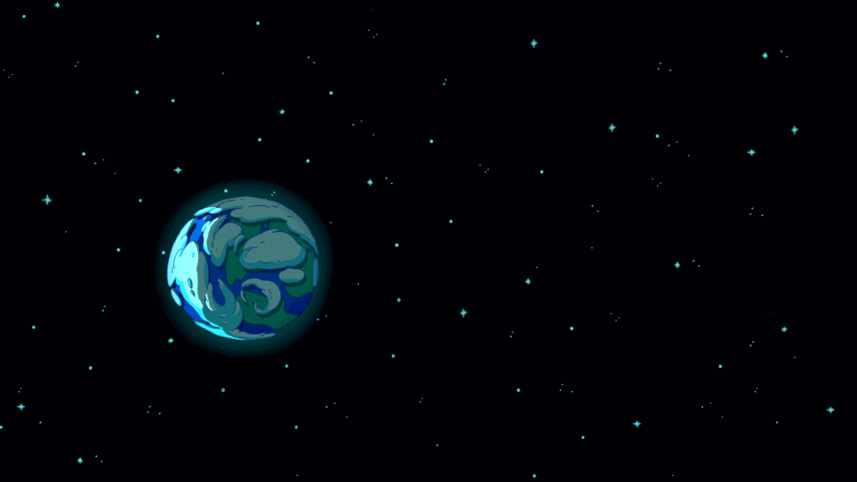
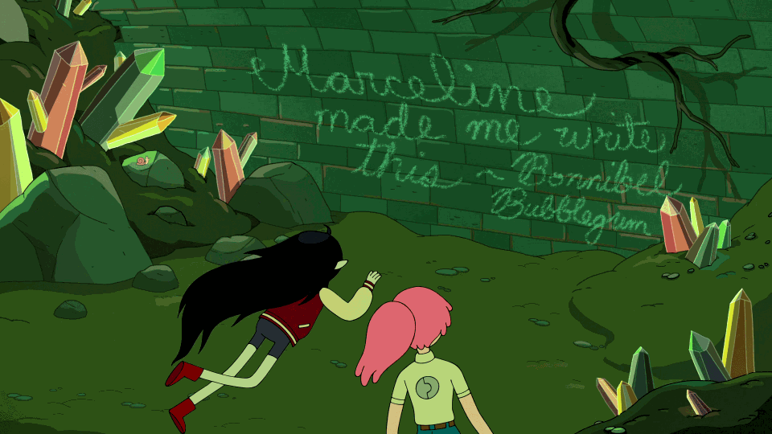

INTRODUCTION

First things first, this post is really long. If you don't want to read it all right now, I recommend bookmarking it so you can come back to it later. This was originally going to be a Reddit text post, but it quickly exceeded the forty thousand character limit and now stands at about six times that amount, which is why I've moved it to a separate site. This also means I can continue to update the timeline for as long as new Adventure Time content is being released.
Secondly, this timeline contains all the spoilers, up to and including Come Along With Me, the finale. Please don't read it unless you've finished the show and you've read all the comics you intend to read. I also recommend you read The Enchiridion & Marcy's Super Secret Scrapbook, since a lot of the timeline draws from that.
I am from the UK, so one must pardon any British spelling or grammar.
Please leave your thoughts and criticisms in the comments section at the bottom of the page, and keep it civil. If you would like to message me privately, send a PM to one of my social media accounts, linked at the top of the page.
Enjoy!

Special thanks
This post was inspired by several Adventure Time timelines published before it. The main reason I started this project was because the timeline by RedLionKing has become outdated and only deals with the core storyline, although my version isn't anywhere near as beautifully written so I recommend you check it out anyway. Also credit to this concise timeline by Viernes de Siluetas, from whom I stole the date system.
Thanks to Uncivilized Elk for his in-depth episode analysis videos which have inspired some details of the timeline, and thanks to all the editors and transcribers on the Adventure Time Wiki without whom this task would have been a lot more arduous.
Lots of credit to SpiderCider and Décadent for painstakingly translating this entire piece into Korean. That's linked at the top of the page, although it's a bit out of date now. If anyone is interested in providing translations for any other languages, drop me a PM.
And of course, thanks to Pendleton Ward and the entire Adventure Time crew for creating one of the most deep, complex, and inspiring worlds in the history of children's television.

Sources
This timeline is designed to be as complete as possible. This means that not only am I drawing events from the show, but also from many other pieces of officially licensed material, including comics, video games, and graphic novels.
One question that gets thrown around a lot is "Are the comics canon?" The short answer is no. Adam Muto and Jack Pendarvis have both clearly stated that they are not. However, the comics are officially licensed, and many of them fit very neatly into the lore of the show. In fact, the only comics which are dramatically irreconcilable with the show are the Bag of Holding arc, in which Finn and Jake throw the Lich into the Sun, and the Seeing Red graphic novel, which contains a multitude of inaccuracies regarding Marceline's past. Other than that, there are only minor plot holes to overlook. Therefore, I'm going to treat the comics like an alternate timeline, which leaves me free to selectively choose which elements I include in the main timeline.
Click here for a list of every single piece of media which has been considered for the timeline. I have also considered things like promotional art and social media posts from members of the show's crew, although these are often tongue-in-cheek and shouldn't be taken as canon in every instance. Storyboards and other production material might also be sourced, but only for clarification; cut scenes do not count. Scrapped episodes also do not count.
Whenever I make a statement or pull a quote from somewhere, I will show the source in square brackets [like this]. That way, you can make up your own mind whether or not you choose to believe a certain element is canon.
I am using the official season arrangement for labelling episodes, which is the arrangement composed of ten seasons used by Cartoon Network and Wikipedia but not the one used by the fan wiki and some members of the crew. For example, Elemental is S08E08 rather than S07E34. This doesn't affect the order of individual episodes in any way, so it doesn't really matter.

Date system
All dates are organised around a year zero, which is the year of the detonation of the Mushroom Bomb and the impact of the Catalyst Comet. BMB stands for Before Mushroom Bomb and AMB stands for After Mushroom Bomb. The letter c before a date stands for circa, and indicates that this is an estimated date. The letter X is used to denote any digit (e.g. 99X could be any year from 990 to 999). A corresponding real-life date is displayed in brackets. Since the beginnings and ends of years are not clear, many events may be one year off. Where applicable, the New Year is assumed to be Finn's birthday.
For labelling things with a real-life date, I have assumed that 0 AMB = 2010 CE. See the section on the Great Mushroom War for evidence supporting this date.
The Mushroom Bomb and the war-time Catalyst Comet hit at approximately the same time. Uniting these two pivotal events makes it much easier to put a date to things, so I have assumed that they both take place in 0 AMB.
THE PAST

c. 13.8 billion BMB/BCE
The Beginning of the Multiverse
Before there was time - before there was anything - there was nothing. And before there was nothing, there were monsters.
The Lich [S06E26 Gold Stars]
Reality exists as an infinite chaotic sea of monsters, including beings like Orgalorg, GOLB, and possibly the Lich. By incomprehensible chance, the monsters eventually come to a common agreement on the state of reality, and this consensus becomes the Multiverse. Therefore, despite its appearance to those who inhabit it, the Multiverse is not actually material. The Multiverse is an emergent product of consciousness rather than consciousness being an emergent product of the Multiverse. Every sentient being that lives in the Multiverse paradoxically maintains its existence by experiencing it, and this also means that every sentient being has an existence beyond the material, known as their soul.
Third Orb does not exist, said the Sage.
Why? asked the Student.
Because the Multiverse, said the Sage, within which Third Orb exists, does not exist. The Multiverse is a Consensus Reality shared by the Minds of all Sentient Beings. If they were to Die, the Multiverse, as such, would suddenly blink out of existence, vanish, be no more.
Why? asked the Student.
Because, said the Sage, there would be no one to Perceive It.
Chapter One of the Wizards' Enchiridion [The Enchiridion & Marcy's Super Secret Scrapbook]
Other than this, the origins of the Multiverse are largely unknown. Nobody knows where the monsters came from or what the true nature of reality is. Everything we know about the world before existence comes from that single glimpse granted by the Lich.
Where did the Multiverse come from? Since logic dictates that asking this question must result in an infinite regression — What created the Multiverse? And what created the Thing that created the Multiverse? Etcetera — this suggests that the mental engine of logical thinking is not designed to determine the Answer.
Chapter One of the Wizards' Enchiridion [The Enchiridion & Marcy's Super Secret Scrapbook]

c. 13.8 billion BMB/BCE
The Structure of Existence
The Multiverse imagined by the primordial monsters is composed of a vast (perhaps infinite) number of "dimensions" which each hold a universe. One of these is the Earth Dimension, which contains the planet Earth (sometimes referred to as "Third Orb") as well as all the other planets, stars, and galaxies in our own universe. Other dimensions include the Astral Plane, the Crystal Dimension, Lumpy Space, the Nightosphere, the Citadel, and many more. Amidst this complex system of dimensions is the Time Room:
At the centre of the Multiverse is a dimension called the Time Room, believed to be the quasi-corporeal dwelling place of the almighty Prismo. The Time Room is the single dimension that exists outside of time. The Time Room produces time waves that are experienced by other dimensions. Some dimensions have permanent links that allow travel to and from. Others become linked temporarily by naturally forming wormholes. And others can become linked artificially by magical portals, torn open by items of great power. An activated portal creates a time dilation in which either end of the portal experiences a temporal synchronisation allowing for the safe passage of particles through a non-local region of space-time.
Booko [S04E26 The Lich]
The physics behind the concept of the Multiverse is somewhat explained in chapter four of the Wizards' Enchiridion, albeit in a very hand-wavy pseudo-scientific way. To prevent all of the dimensions from catastrophically colliding with one another, all particles in a specific dimension have their own unique "frequency". Particles with different frequencies reside in different dimensions. Adjusting this frequency allows for interdimensional travel. Another property of each dimension is its "elasticity", which determines how easy it is to change the frequency of particles within that dimension. As stated above by Booko, dimensions can be interlinked if the frequencies of the particles in a local region of both dimensions can be somehow synchronised, hence forming a kind of gateway called a "portal". This is easier in more elastic dimensions. A very rudimentary form of temporal synchronisation is demonstrated by Finn when he interacts with the little people, who reside in "a different dimensional plane" according to Jake. Finn shakes the little people, which synchronises their frequencies enough to allow for brief interdimensional communication. [The Enchiridion & Marcy's Super Secret Scrapbook, S05E05 All the Little People]
The elasticity of a dimension has other effects besides ease of interdimensional travel. For example, highly elastic dimensions are more easily influenced by magic (more on that in a couple of sections), and are more likely to allow for interspecies hybrids to be born. The most extreme known examples of hybrids seen in the show are Jake's descendants, who contain genes from at least four species; bears, rainicorns, dogs, and shape-shifters. The elasticity of a dimension can vary with time. Earth was elastic in the time of the dinosaurs, then became very rigid during modern times, then elastic once again following the detonation of the Mushroom Bomb. [S06E12 Ocarina, S06E24 Evergreen, S08E08 Elemental]
One final principle of the Multiverse is the concept of "Amok Time", which states that causality can sometimes be reversed. This allows for accurate predictions of the future and the occasional bit of time travel. At the very beginning of time there is a place called the Vanishing Point, and anyone who gets trapped there will be erased from history. Jake the Dog claims to have seen the Big Bang while travelling back in time to visit the Vanishing Point. [The Enchiridion & Marcy's Super Secret Scrapbook, Beginning of the End #3]
Note: A slightly more scientifically rooted explanation for the structure of the Multiverse is alluded to in storyboard panels from Crossover. The panels cite a 1994 Scientific American article by physicist Andrei Linde which talks about the eternal inflation model. However, this model has never been explicitly referenced in the show and is pretty much irreconcilable with the other model.
It's also worth mentioning that time travel is handled quite differently in the comics compared to the show. In the comics it is a frequently used plot device, with instances of time travel happening in several arcs including the Time Machine arc, Banana Guard Academy, the Cosmic Elementals arc, Beginning of the End, and the first arc of Season 11. On the other hand, the only real instance of time travel which occurs in the show is Betty travelling into the future. Princess Bubblegum even makes it clear that she is not able to produce a "real" time machine in Bad Timing.

c. 13.8 billion BMB/BCE
The Cosmic Entities
Prismo, who was briefly mentioned earlier, is one of the many god-like "Cosmic Entities" who inhabit the Multiverse and make up the pantheon of Adventure Time. Most of them have a specific purpose within the elaborate clockwork of existence:
- Prismo is a Wish Master and the keeper of the Time Room, capable of granting one wish to anyone who succeeds in visiting him. He is kept alive by the dreams of an old man, and later by the dreams of Jake the Dog. [S06E01 Wake Up]
- The Cosmic Owl monitors the dreams of every being in the Multiverse and chooses which ones will come true. Dreams containing the Cosmic Owl are therefore invariably prophetic, although these dreams are often metaphorical rather than literal. Dreams containing the Cosmic Owl in which the dreamer sees their own death are known as "croak dreams". [S03E18 The New Frontier, S06E36 Hoots]
- Death governs the fifty Dead Worlds, where the souls of the inhabitants of the Multiverse go after they die. He lives in a castle of light in the Land of the Dead. [S02E17 Death in Bloom, S04E15 Sons of Mars]
- The Catalyst Comet delivers great change to Earth every thousand years. More on that later. [S06E25 Astral Plane]
- GOLB is the embodiment of chaos and discord. When he consumes people, they are reset to their primal state and eventually removed from existence in such a way that not even wish magic can bring them back. [S06E38 You Forgot Your Floaties, S10E13-16 Come Along With Me]
- Many of the other monsters from before time likely exist as Cosmic Entities, including Orgalorg. [S06E26 Gold Stars]
It can sometimes be unclear who is and is not a Cosmic Entity. In addition to those above, the fan wiki lists Grob Gob Glob Grod, Party God, Cuber, Life, the Elementals, Finn, Martin, and the Lich as Cosmic Entities. A deity named Malus, who bears a striking resemblance to the real life pagan deity Abraxas, is also seen in one of Simon's books on GOLB. [Wiki: Category:Deities and Cosmic Entities, S10E13-16 Come Along With Me]
Prismo apparently has a "boss" whose identity is unknown. [S07E23 Crossover]

c. 13.8 billion BMB/BCE
The Concept of Death
Adventure Time has done a surprising amount of exploration around what might happen after you die. There appear to be four main possibilities:
- You could be reincarnated as a new being. This might only apply to Elementals and Agents of Change (more on these later). [S05E34 The Vault]
- You could become a ghost, a soul without a material counterpart, and continue to roam the mortal plane. This normally happens when you have "unfinished business". [S06E17 Ghost Fly]
- You could become a demon, a physical manifestation of a ghost, and live in the Nightosphere. [Adventure Time #53]
- You could be transported to one of the fifty Dead Worlds based on the good and bad things you've done during your life and the way in which you died. It is not clear whether the Dead Worlds are actual dimensions or a separate kind of thing. [S04E15 Sons of Mars, Adventure Time #53]
It is implied that ending up in a higher Dead World is a more desirable outcome. The highest ever mentioned in the show is the Fiftieth, which appears to be the equivalent of Heaven and is probably synonymous with "Glob World". [S03E24 Ghost Princess, S05E21 The Suitor, S03E18 The New Frontier]
According to Jake, lower Dead Worlds are the worlds containing ghosts, which overlap with the material world. [S06E17 Ghost Fly]

c. 13.8 billion BMB/BCE
The Concept of Magic
What is the Origin of Wizardry? Pour yourself a cold glass of lemonade, sit in a comfy chair, kick your shoes off, lean back, close your eyes, and think. If reality is Mental in nature, analogous to a Cosmic Mind, and if Wizardry is a function of the Imagination, then the Forces of Nature in the Multiverse are akin to the Currents of the Cosmic Imagination. Thus, the Origin of Wizardry is at the Core of Creation, and Wizards can create or destroy as they wish, tapping into the Power of the Cosmic Imagination.
Chapter One of the Wizards' Enchiridion [The Enchiridion & Marcy's Super Secret Scrapbook]
Since the Multiverse is maintained by the perceptions of the sentient beings within it, the imagination can actually be used to change the very structure of existence. This practice is most commonly known as "magic" and used almost exclusively by witches and wizards, although others can also learn to manipulate the material world using their mind.
However insecure a wizard might be, wizardry is the realm of the Imagination, and even the flabbiest, most flop-sweaty wizard can warp your perceptions enough to make you believe they are fully capable of kicking your butt.
Chapter Two of the Wizards' Enchiridion [The Enchiridion & Marcy's Super Secret Scrapbook]
Magic most commonly manifests itself in the form of spell-casting, in which magic users recite incantations and channel their imagination through magically charged items in order to produce various effects. They usually have to practice one trick over and over until they are able to consistently perform it, which is why most magic users have a unique but limited arsenal of spells. There are other methods of performing magic as well. For example, Finn has performed magic via meditation and song, and Son of Rap Bear can produce explosions by rapping. [The Enchiridion & Marcy's Super Secret Scrapbook, S03E07 Still, S06E43 The Comet, S10E03 Son of Rap Bear]
According to Betty Grof's MMS theory, all magic users have varying levels of magic, madness, and sadness. These three properties are required in order to reliably perform magic. [S06E38 You Forgot Your Floaties]
There are two perspectives on the concept of magic. Scientists like Princess Bubblegum believe that it happens due to observational quantum effects and is grounded in scientific principles. On the other hand, magicians choose not to question the methods by which magic is possible, and, thanks to this blind belief, they are far more proficient at performing it. Neither view is incorrect. [S05E26 Wizards Only, Fools]

c. 13.8 billion BMB/BCE
The Infinite Enchiridion
The Enchiridion is an ancient tome and one of the most powerful magical artifacts in the Multiverse. Its exact origin is unknown, but the author is implied to be the reader. Over the course of all of history, it is written and enchanted by thousands of wizards. These spells cause it to gain sentience, change with every reading, automatically translate into the reader's native language, and contain knowledge from the past and future. The original tome is over eight million pages long. Various abridged copies are eventually produced, all of which retain its magical properties. The tome is split into two books: one for heroes and one for wizards. It teaches heroes how to conduct themselves and best serve their wizard masters, and it teaches wizards how to perform many ancient and secret forms of magic. [The Enchiridion & Marcy's Super Secret Scrapbook]
Every ten thousand years, the Enchiridion transports its original author to the Time Room, where they must make a choice. They can either force the Multiverse to reset to how it was ten thousand years ago, or they can allow it to continue into the unknown. The author almost always chooses to have it reset.
Since we've done this thousands of times, you may feel this Universe has been played out, so to speak. Every other time, you've decided to go back in time and start over, to that moment in the quarry when you were carving your name and your true love's name into the side of the boulder, when you first conceived of writing The Enchiridion. You were the young Wizard who wrote it, but you've forgotten. When I become sentient enough to tell you, after ten thousand years, I remind you and ask you if you'd like to end it all and let the Unknown occur, or if you'd like to go back again and experience another variation of the last ten thousand years. The Multiverse is unstoppable. Even if it ends, it will sprout back into existence again, but this time in some new, unknown way. Just as it did when all of This began. I'm just asking. It's your decision.
The Enchiridion [The Enchiridion & Marcy's Super Secret Scrapbook]
It is somewhat unclear how this cycle fits into the rest of the history of the Multiverse.
Placing gems into various slots in the Enchiridion can produce powerful magic spells. Most notably, filling the gem slots in the front cover enables the user to open a portal to any dimension in the Multiverse, and might even allow for time travel. [S04E26 The Lich, S09E09 Skyhooks II]

c. 4.5 billion BMB/BCE
The Formation of the Solar System
The planets Earth and Mars form in the Earth Dimension around a sentient star called the Sun. [S06E10 Something Big]
On Planet Earth exists the concept of five fundamental elements: Fire, Ice, Candy, Slime, and Lumps: parodying the real-life (but false) classical elements of fire, water, earth, air, and aether. These will become important later on. [S08E08 Elemental, S09E09 Skyhooks II]
A demon named Hunson Abadeer comes into being around this time:
My single earliest memory occurred eons before the Mushroom War. This memory consists of one image: me eating a ham sandwich, perched atop Rock Candy Mountain, overlooking the Sea of Something, long before Plants, Animals, and Actual Things came into existence in the Land of Ooo, surrounded by an all-encompassing Night of Nothingness. Full disclosure: I believe I was a ghost at the time, although it isn't clear how a ghost can sit on a mountain peak or eat a ham sandwich.
Hunson Abadeer, in the Encyclopaedia [The Adventure Time Encyclopaedia]
Note: This excerpt suggests that the Land of Ooo has existed since the beginning of life on Earth, but this is now known to be false since it did not form until after the Great Mushroom War.
It is not known if Hunson Abadeer was once a living being, or if his soul simply came into existence out of nothing. Even he admits to not knowing his own origin. Once he manifests a physical demon body, he and most other demons end up living in a hellish dimension called the Nightosphere. He claims that he was a carny boss in his youth, going by the name Johnny Corndog. [The Adventure Time Encyclopaedia, Season 11 #2]

c. 4.5 billion BMB/BCE
Other Worlds
Aside from Earth, a multitude of other planets in and around the Solar System are also inhabitable. Eventually, interplanetary travel becomes widespread enough that many of them are able to communicate with one another, forming the backbone of an interstellar community. As far as we know, Earth never makes contact with its neighbours. [S06E41 On The Lam]
Currently, these are the other worlds within the Earth Dimension where life is known to exist:
- Mars, the outer neighbour of Planet Earth, which is eventually colonised. Its story is very important to the plot and will be fully explored in a while. [S04E15 Sons of Mars]
- The asteroids inhabited by the leaflan and the tuffbones, which appear to be fairly near to Earth because Bubblegum can see them through a telescope and reach them using a conventional rocket. [Marceline Gone Adrift #2]
- The home planet of Cuber and his sister Tuber, where the graybles would be invented. It appears to be a fairly Earth-like world. [S06E35 Graybles 1000+]
- The planets which were once terrorised by Orgalorg (pictured above). They are home to a range of unique lifeforms. [S06E40 Orgalorg]
- The planet of the koala people. From what we have seen, this appears to be a desert world where food and water is scarce but gold is plentiful. The koala people fall under the oppressive regime of a group of humanoid lizard people, leading to the emergence of a group of rebels who have been fighting for their freedom ever since. Many other alien species are present on this planet, which reinforces the theory that there is some kind of interstellar community. [S06E41 On The Lam]
- The home planet of the grey aliens. According to Tree Trunks' alien husband, a round trip from Earth to this planet and then back would take at least forty years. It is abandoned by its native inhabitants at some point. [S08E17 High Strangeness]
- Ni'Rah, the home planet of Warren Ampersand, a small world orbited by an even smaller black hole. Its entire society and culture is fabricated by Warren. [S10E10 Jake the Starchild]
Note: The spelling of "Ni'Rah" has not been confirmed. It is known to be within the Earth Dimension because in Temple of Mars, King Man makes fun of Jermaine for saying that it's somewhere in space, pointing out that "literally every single thing in this dimension is in space".
The technological level of most interplanetary civilisations is unknown. Some creatures, such as the giant moth, appear to be capable of faster-than-light travel, given the fact that Martin travels from the planet of the koala people back to Planet Earth in a very short time. [S06E43 The Comet]

c. 3.5 billion BMB/BCE
The Cosmic Elementals
Four Cosmic Entities each rule over one of the four elements:
- Zon inhabits the Sun and rules the element of Fire.
- Lun inhabits the Moon and rules the element of Ice.
- Arklothac rules the element of Candy.
- Ng'zot Aa rules the element of Slime.
Zon, Arklothac, and Ng'zot Aa reap the Earth for many years, terrorising the fledgling life that has begun to appear. Lun takes pity on the inhabitants of Earth and decides to take action against the other Elementals. She betrays them and has them locked outside the Earth Dimension so that they can do no further harm. [Adventure Time #59]
To prevent the evil Elementals from ever returning, Lun sacrifices herself to create the Sword of Lun, a weapon capable of destroying them. Before being used, the sword must await its true bearer, "a warrior who can withstand great bodily loss without injury". [Adventure Time #61]
As a result of this event, the Ice Elemental's betrayal would go on to echo and repeat itself several times through history. [S06E24 Evergreen, S08E08 Elemental]

c. 3.5 billion BMB/BCE
The Earthly Elementals
Ever since life began on this planet, there have always been embodiments of the four elements: Fire, Ice, Candy, and Slime. Across eons and millennia the four Elementals lived, and died, and lived again.
Patience St Pim [S08E08 Elemental]
The Elementals are powerful wizards who live on Earth and each represent one of the aforementioned elements. They possess the power to generate and shape their own element in a variety of ways. Whenever an Elemental dies, their soul is reincarnated into a new body, meaning that there is almost always a living representative for each element at any one time. The Elementals can occasionally make contact with their past lives. [S06E24 Evergreen, S08E19 Jelly Beans Have Power]
The fifth element, Lumps, behaves as an "anti-element", and also has an associated Elemental to go with it. The Lumps Elemental is capable of undoing the magic of the other four, as well as some other types of transfiguration magic. Furthermore, Lumps apparently permeates through the universe, similar to aether, its classical counterpart. A Lumpy Space person is seen on the planet of the koala people, suggesting that Lumpy Space is accessible from anywhere in the universe. [S09E09 Skyhooks II, S06E41 On The Lam]
Lumps are the subspace molecular lattice that binds together the scientific and magical forces of Ooo. More powerful than any one element, it's the force that orders reality into its true shape.
Lumpy Space Queen [S09E09 Skyhooks II]
Like all magic users, the power of the Elementals is entirely dependent on the elasticity of the Earth Dimension. For example, Evergreen, who lived millions of years in the past, is capable of constructing an entire castle from ice, whereas the fire elemental of the pre-war era struggles to heat a single cup of coffee. [S06E24 Evergreen, S08E08 Elemental]
The symbol used to represent the main four elements is a circle divided into quarters ⊕. This is also the real-life astronomical symbol of Planet Earth. [S08E19 Jelly Beans Have Power]

c. 3.5 billion BMB/BCE
The Catalyst Comet
At around the same time, a Cosmic Entity known as the Catalyst Comet begins its millennial cycle:
Every one thousand years, the Catalyst Comet mysteriously reincarnates itself and collides with Earth, bringing with it an Agent of Change.
Grob Gob Glob Grod [S06E25 Astral Plane]
Every comet strike brings great change to the world by delivering a being known as an "Agent of Change" or "Comet Avatar". Sometimes, the Agent of Change will succeed in turning the world into a better place. But sometimes, the comet delivers great evil into the world, and an era of destruction and death ensues. Like the Elementals, the Agents of Change are reincarnated after death so that they can continue their mission over the course of more than one lifetime. [S06E43 The Comet]
The Comet takes on a different colour every time it strikes. So far, four have been depicted: Green, Yellow, Blue, and Purple. The stories behind each of them, and the stories behind the Agents which they spawn, form a core part of the lore of the show and will be explained later in the timeline.

c. 65 million BMB/BCE
The Twin Gems
Two sentient meteors (not to be confused with the Catalyst Comets) named Carl and Gemma, one red and one blue, crash to Earth during the time of the dinosaurs and become compressed into gemstones within two separate volcanoes. They are in love, but are trapped under the ground and forced to remain separated for millions of years to come.
My friend was supposed to land beside me, but something went wrong. I found out later that she landed in another volcano and became a gem too, a blue one. Goes by "Gemma Gemmerson", which, you know - whatever. But for now, we were separated! And we'd stay separated for millions of years. It turns out it takes a really long time for tectonic movement to bring rocks to the surface.
Carl the Gem [Adventure Time #25]
Note: This is probably not the event that causes the extinction of the dinosaurs, even though it happens at about the same time.

c. 65 million BMB/BCE
Evergreen's Crown and the Green Catalyst Comet
During the time of the dinosaurs, the four Elementals are Urgence Evergreen (Ice), Balthus (Fire), Chatsberry (Candy) and Slimy D (Slime). The Lumps Elemental of this time is never mentioned. Evergreen the Ice Elemental has a mutated dinosaur servant named Gunther, who vainly hopes to eventually become his master's magical apprentice. Gunther briefly meets Finn and Jake while they are travelling through time after escaping the Vanishing Point. [S06E24 Evergreen, Beginning of the End bonus chapter]
Evergreen spots the impending Green Catalyst Comet and notices that it is far more powerful than those that have come before it. It carries so much power that it would wipe out most of the life on the planet, so Evergreen seeks a way to stop it. He uses his knowledge of technology and magic to construct a golden crown capable of granting its wearer their greatest wish, but it needs a power source: the ruby eyes of the lava dog Magwood. To help battle Magwood and retrieve the eyes, Evergreen summons the other three Elementals to his castle from their respective realms. They reject his plan, stating that wish magic is too dangerous and reminding him that even if they die, they will be reincarnated:
Hath not a Comet impacted our world every thousand years with no lasting grievousness? If this Comet hits, we four indeed may perish, but the elements we embody - Fire, Ice, Candy, and Slime - will live on. But a misplaced wish could cause irreversible damage to the very structure of existence.
Balthus [S06E24 Evergreen]
Ignoring their advice, Evergreen has them frozen and sets off to take on Magwood alone. His mission is successful and he retrieves the eyes before rushing them back to his castle and completing the crown. However, just as he is about to use it to vanquish the Comet, he is attacked by Magwood, who begins to knock down sections of the castle in its blind rage. Evergreen becomes trapped under debris and is unable to put on the crown and wish for the Comet's destruction, so he instead orders his dinosaur servant Gunther to do it. But Gunther's greatest desire is not to destroy the Comet.
Instead of stopping the Comet, Gunther's truest, deepest wish came true. His nose lengthened, white hair grew from his head, and a beard descended from his face as the crown changed Gunther into Evergreen. Snow began swirling within the room. Evergreen was horrified. The Comet had arrived. It was all too late.
Chapter Five of the Wizards' Enchiridion [The Enchiridion & Marcy's Super Secret Scrapbook]
The comet kills the four Elementals, and is likely to be the event which causes the extinction of the dinosaurs. The crown saves Gunther by storing his consciousness in its circuitry. In the future, any individual who wears the crown will turn into Gunther's image of Evergreen: a mad and powerful ice elemental. [S08E01 Broke His Crown, S03E20 Holly Jolly Secrets Part II]

c. 65 million BMB/BCE
The Lich
It is likely that the Green Comet's Agent of Change is the Lich, an embodiment of evil whose only desire is to extinguish all life. He is "the last scholar of GOLB", although the exact meaning of this is unknown. [S05E01 Finn the Human, S09E13 Whispers]
Fall. You are alone, child. There is only darkness for you, and only death for your people... I will command a great and terrible army, and we will sail to a billion worlds. We will sail until every light has been extinguished. You are strong, child. But I am beyond strength. I am the End.
The Lich [S06E02 Escape from the Citadel]
Since the Multiverse is maintained by the conscious beings within it, the end of life would mean the end of the Multiverse, and reality would return to its initial state of chaos and monsters. This is probably the Lich's ultimate goal. The Lich lies dormant for millennia, awaiting the right opportunity to rise to power.

c. 200,000 BMB/BCE
Humans and Vampires
The extinction of the dinosaurs allows mammals to dominate the planet, and eventually this leads to the evolution of vampires and humans.
When my Dad was trying to wise me up to the ways of the world, he told me that the race of vampires were ancient. He said they'd been on Earth before humans, and that when the Ice Age began, they hibernated underground until it was over.
Marceline, in her scrapbook [The Enchiridion & Marcy's Super Secret Scrapbook]
Vampires are terrifying humanoid creatures who suck the blood from the necks of other creatures for nourishment and are capable of turning their victims. However, vampires in Adventure Time do not actually feed on blood itself, instead taking their sustenance from the colour red. This doesn't stop most vampires from feeding on blood anyway. They remain mostly hidden from the human population until after the Great Mushroom War. [S01E12 Evicted!, S07E08 Vamps About]
Werewolves also seem to be native to Earth, so probably evolved at around this time. [The Enchiridion & Marcy's Super Secret Scrapbook]

XXXX BMB/BCE
The First Coming of GOLB and the Death of Margles
Earth is not the only place in the Solar System harbouring life. At some point, a utopian society emerges on Mars. It is not clear where they came from, but it has been theorised that they are advanced humans who became somehow transported back in time. This theory is supported by the following facts:
- Their king is Abraham Lincoln, a human from the future. [S04E15 Sons of Mars]
- Moe was involved in the design of the Martian colony, as seen in blueprints while his memory is playing. [S07E14-15 The More You Moe, The Moe You Know]
- Betty Grof says that Glob's helmet would react to her "ancient human DNA code", suggesting a connection between humans and Martians. [S06E38 You Forgot Your Floaties]
Lincoln's champion is the four-faced Grob Gob Glob Grod, who later becomes entwined in the religious beliefs of the inhabitants of Earth. GGGG has a brother named Magic Man, and Magic Man has a wife named Margles.
Mars is attacked by GOLB, who consumes Margles and completely removes her from existence. To prevent his second coming, Magic Man builds a defence system called the Magical Automated Resistance Generating Laser Energy Supplier (M.A.R.G.L.E.S.) in the image of his late wife, and plans to install it on the peak of Olympus Mons.
I looked everywhere, you know. Every dimension, every Dead World. I even wished you back in Prismo's Time Room, but you were gone - erased. For hundreds of years I held that sadness until my magic and science were strong enough to create you from my nightmares.
Magic Man talking to M.A.R.G.L.E.S. [S06E38 You Forgot Your Floaties]
Unfortunately, Magic Man's grief has corrupted his spell programming, and the new defence system goes insane and has to be deactivated. Magic Man begins to spiral into madness after effectively losing his wife for the second time. He torments the people of Mars for centuries to come. [S04E15 Sons of Mars, S06E38 You Forgot Your Floaties]
This event is witnessed by Finn and Jake while they are travelling through time after escaping the Vanishing Point. [Beginning of the End bonus chapter]

XXXX BMB/BCE
Hunson Takes the Nightosphere
A very, very long time ago, the Nightosphere was a very different place. It was chaotic. Lawless. A real nasty place. That's about when my dad showed up. He got sick of nothing getting done, everybody eating everybody else. These two old, evil globs, they liked things just how they were. My dad had different ideas. He worked old magics for a hundred days and nights - taking snack breaks, obviously - until he made a weapon that could win the Nightosphere.
Marceline [Seeing Red]
The demon Hunson Abadeer constructs the Abadeer Axe and uses it to defeat the previous rulers of the Nightosphere, becoming the new Lord of Evil. His rule is cruel and tyrannical, but apparently still better than that of his predecessors. [S04E06 Daddy's Little Monster, Seeing Red]
According to Hunson Abadeer's encyclopaedia, the ancient demons were "trepanning fetishists" who attached engraved iron plates to their skulls containing ancient secret knowledge. [The Adventure Time Encyclopaedia]
Later on, Hunson Abadeer and Death begin to compete for the souls of the recently deceased. Hunson tries to encourage them to become demons and join his subjects in the Nightosphere, while Death tries to encourage them to come with him to the Dead Worlds. At one point the two rivals are both members of the same cover band. Hunson kicks Death out for being a better drummer than him. [Adventure Time #53, The Adventure Time Encyclopaedia]
Also around this time, Hunson Abadeer meets Abraham Lincoln. [S04E05 Return to the Nightosphere]

XXXX BMB/BCE
The Rainicorn-Dog Wars
By this time, the Crystal Dimension is mainly inhabited by two species: the Korean-speaking magical rainbow-unicorn creatures known as "rainicorns", and a race of intelligent talking dogs. For an unknown reason, the two species fall into multiple disputes over the course of many millennia, eventually leading to the outbreak of war. Not much is known about how the wars play out, nor who wins, although it seems to involve one or both sides engaging in aerial flying saucer combat. [S02E12 Her Parents]
All of rainicorn history is documented in the Rainicornicopia. [S03E22 Paper Pete]
For thousands of years rainicorns battled dogs for territory in the Crystal Dimension.
Jake [S02E12 Her Parents]
Finn and Jake briefly witness the war while travelling through time after escaping the Vanishing Point. [Beginning of the End bonus chapter]
A few details of the closing years of the war will be explored later in the timeline.
Note: This extremely long time scale could be an exaggeration on Jake's part. The wars might only have gone on for a few years or even less.

X000 BMB/BCE
Orgalorg and the Yellow Catalyst Comet
One of the monsters from before the beginning of existence is Orgalorg, an evil Cosmic Entity:
Orgalorg is an ancient Cosmic Entity who ruled the Solar System with his cruel and deadly whims: The Breaker of Worlds. He was seeking ever more power. He desired to intercept a Catalyst Comet and absorb its essence. Thereby did he offend the King of Mars, who decreed that Orgalorg should be cast down. And yes, he was cast down, by the flaming sword of Grob Gob Glob Grod. Orgalorg was banished to an inhospitable planet where he would forget everything. Yea, even forget his identity and from whence he came. And the prophets say that the gravity of the planet did crush and compress Orgalorg into a more powerless and cuddlesome form.
Alien Elders [S06E40 Orgalorg]
Finn and Jake witness the battle between Orgalorg and GGGG while they are travelling through time after escaping the Vanishing Point. [Beginning of the End bonus chapter]
The powerless and cuddlesome form of Orgalorg is an immortal penguin who will much later become known as Gunter. He becomes a hunter-gatherer alongside early humans. [S06E40 Orgalorg]
Meanwhile, the Yellow Catalyst Comet strikes the Earth and leaves behind its Agent of Change. Given the colour scheme, it's possible that this Agent of Change will eventually be reincarnated as Jake the Dog, although this has not been confirmed.
Note: This probably takes place after the first coming of GOLB because GGGG is wearing their "groovy headgear" to hide their baldness during their fight with Orgalorg.
Orgalorg/Gunter's gender is ambiguous. However, all characters in the show assign him male pronouns so I will too.

XXXX BMB/BCE
Warren Ampersand
A powerful shape-shifter named Warren Ampersand wishes to live forever, so he creates a plan to drain the youth from his own children. Every generation, he impregnates a chosen host so that their offspring inherit his powers. Later in his children's lives, he lures them to his homeworld, Ni'Rah, where he tricks them into shape-shifting while wearing a special belt which drains their power and gives it to him.
I was dying. I needed to siphon your precious stretchy essence to keep me young and virile. I use these belts as a conduit. The more you stretch the stronger I grow. I've done it hundreds of times, to hundreds of sons.
Warren Ampersand [S10E10 Jake the Starchild]
He would continue this sick trickery for many generations, exploiting and then outliving each child in succession. One of his future sons would be Jake the Dog.

XXXX BMB/BCE
The Underground
Thousands of years ago, a race of magical rock people live on Earth.
Millennia ago, before the Great Mushroom War, prior to the Rhubarb Police Action, we lived on the surface. When the magic faded, people lost patience with those who were... different. We were banished underground - simply because we valued nature above progress, open fields to buildings...
Lewis Clark [Adventure Time Comics #20: "Cavities"]
They were presumably banished by early humans, and live in subterranean lairs for the next few thousand years, eventually coming to call themselves "The Underground". [Adventure Time Comics #20: "Cavities"]
Note: I have no idea what the "Rhubarb Police Action" is. Presumably it is some other historical event.

c. 4500 BMB to 400 BMB (2500 BCE to 1600 CE)
Orgalorg Through History
The penguin form of Orgalorg appears in some hieroglyphic artwork from the time of the Ancient Egyptians, implying that he joined their society. Construction of the Egyptian pyramids is completed in approximately 2560 BCE, and Charlie, one of the children of Jake the Dog, would study tarot reading and divination there thousands of years later. [S06E40 Orgalorg, S08E11 Daddy-Daughter Card Wars]
As humans continue to develop and thrive, the elasticity of the Earth Dimension settles into a more rigid pattern, bringing about the end of magic. For now. [The Enchiridion & Marcy's Super Secret Scrapbook]
During the height of the Roman Empire, the penguin form of Orgalorg is a gladiator and a chariot racer in Ancient Rome, and is depicted in some pottery from the time. During the middle ages, he joins some kind of hooded organisation: possibly a monastery or a secret society. During the Elizabethan era, he lives in Britain and appears alongside Elizabethan nobles. [S06E40 Orgalorg]

c. 1900 BMB (100 CE)
The Dual Swords
The legend of the Dual Swords takes place during the time of the Ancient Romans:
Legend tells of two mighty gladiators, as bonded to each other in friendship as two sides of a coin, who were made to fight a death match by their wicked emperor. When one of the Heroes' swords was unexpectedly stolen by a flying serpent who liked shiny things, the other Hero split his own sword in half, and the two gladiators each fell on one half in defiance of the cruel emperor's order. Throughout the centuries, the Dual Swords have been separated many times by merchants, curio collectors, and thieves, but they always seem to find their way back together.
Chapter Three of the Heroes' Enchiridion [The Enchiridion & Marcy's Super Secret Scrapbook]
Thousands of years later, the Dual Swords would end up back together in the arena of the Fight King, who is likely an immortalised version of the evil emperor. [S03E02 Morituri Te Salutamus]

XXX BMB (1XXX CE)
The Journey of Evergreen's Crown
During the middle ages, Saint Nicholas comes into possession of Evergreen's crown and wears it. Like the dinosaur Gunther, the original Santa's consciousness becomes stored in the circuitry of the crown. He briefly gains the powers of the Ice Elemental, which could be the cause of Santa Claus' later association with snow and ice. It is unknown whether he is able to overcome the crown or if he succumbs to it until it finds its next host.
Says he's the first "Santa". Like, what's even a Santa?
Gunther's consciousness [S08E01 Broke His Crown]
Likewise, the consciousness of an Icelandic boy named Sveinn becomes stored in the crown's circuitry after wearing it just once. Given his heritage, it's possible he has some relation to the Scandinavian dockworker who would later sell the crown to Simon Petrikov. [S08E01 Broke His Crown, S03E20 Holly Jolly Secrets Part II]
That's Sveinn. He only wore the crown once.
Gunther's consciousness [S08E01 Broke His Crown]
The fact that he wore it so briefly suggests either that he is able to overcome its influence or that he dies not long after wearing it.
Note: Sveinn only says a few words in the episode, making it hard to determine which Nordic language he is speaking. However, the storyboards specify that it is Icelandic.

145 BMB (1865 CE)
The Assassination of Abraham Lincoln
Despite taking a fatal gunshot to the head, Abraham Lincoln manages to make some kind of deal with Death, bribing him with a penny. Instead of being killed, he becomes immortal and travels back to ancient times, where he becomes the deific King of Mars and rules the Martian colony. The story behind why this happened is not known. It is probably best not to question it. On Mars, Abraham Lincoln is prophesied to some day meet Jake the Dog. [S04E15 Sons of Mars]
Look. It's the dog. The one you were prophesied to meet.
Grob Gob Glob Grod [S04E15 Sons of Mars]

c. 100-0 BMB (1910-2010 CE)
The Further Adventures of Orgalorg
Sometime around the dawn of the twentieth century, the penguin form of Orgalorg opens a drinks manufacturing company called "Gunto's" and becomes fairly wealthy thanks to its success. He owns a car (closely resembling a Ford Model T) and probably still lives in Britain. It seems unlikely that an immortal penguin god would be able to adapt and blend in so well with modern society, but somehow Orgalorg manages to do so without raising too many eyebrows. [S06E40 Orgalorg]
Note: Orgalorg has not yet been renamed Gunter at this point, so the similar name of the company must be a coincidence.
During the First World War, he becomes a fighter pilot for the British Royal Air Force and flies a biplane resembling a Sopwith Camel, which entered service in 1917 CE (93 BMB). It is unknown whether or not Orgalorg has any involvement in the Second World War, but at some point he becomes a movie director. By the seventies, he has moved to the United States where he joins the counter-cultural movement. [S06E40 Orgalorg]

45 BMB (1965 CE)
The Birth of Simon Petrikov
Simon Petrikov is born to unknown parents. Based on his name and the fact that he ends up attending the University of Petrograd in St Petersburg, he is probably raised in Russia. [The Enchiridion & Marcy's Super Secret Scrapbook]
You will no longer terrify a forty-seven year old man and a seven year old girl!
Simon Petrikov in 2 AMB [S05E14 Simon & Marcy]
While he doesn't seem like much at the moment, Simon would eventually undergo a series of unfortunate tragedies leading to his transformation into the Ice King. His story will be explored much more deeply in a while.

28 BMB (1982 CE)
The Birth of Patience St Pim, the Ice Elemental
After the death of an unknown previous Elemental, the spirit of the Ice Elemental is reborn as Patience St Pim. She and the other Elementals of the modern generation discover their powers and eventually find one another, although their powers are weak due to the rigidity of the Earth Dimension at this time. [S08E08 Elemental]
Ha, I remember being eighteen. I'm twenty-eight.
Patience St Pim [S08E08 Elemental]
By this time, Patience is already making plans for an "elemental purification spell" which she plans to use to re-establish the four elemental realms. She briefly meets Finn and Jake on the streets of a city while they are travelling through time after escaping the Vanishing Point, and rants to them about her plan.
Purity, that's the key! The purity of the elements! I can smell the magic humming off you two, but in this era there's hardly a whisper of the stuff! I need to get myself to some other time, where the magic has more juice! More grit!
Patience St Pim [Beginning of the End bonus chapter]

XX BMB (19XX CE)
The Human Space Age
Despite his comfortable integration into human society, Orgalorg somehow realises that he is something more than just an immortal penguin. Since it was the gravity of the planet Earth which compressed him into his current weak form, he recognises that he must attempt to escape into space so that he can take his true form. Meanwhile, a man named Davey Johnson works a desk job at a space agency and is a previous life of Finn Mertens. He is offered the chance to go to space but declines, and thanks to this decision he spots Orgalorg trying to steal the rocket and has him apprehended. [Adventure Time #50]
Note: Davey was alive before the war, meaning that if the Blue Comet struck at the same time as the war then Davey was actually a previous life of the Blue Comet rather than a future reincarnation of it. This suggests that the Catalyst Comet is not the "original" progenitor of the Agents of Change, so the existence of Davey should probably be taken with a pinch of salt. See "The Blue Catalyst Comet" for more discussion about the placement of that comet.
Space travel develops significantly faster than in real life, to the point where humanity constructs a large functional base on the Moon before the Mushroom War. [Adventure Time #60]
In addition, a Mars rover (resembling the real life Mars rovers Opportunity and Spirit) possibly discovers evidence of the Martian civilisation, pictured above. [Sons of Mars title card]

c. 10 BMB (2000 CE)
Simon and Betty
Magic has mostly died out by modern times, with the great heroes and wizards of old becoming nothing but myths and legends. However, there still seems to be a vague awareness of the existence of magic and it is suggested that a number of people still believe in it:
Now, I never believed in the supernatural stuff myself - just had a fascination with superstitions.
Simon Petrikov, in his tapes [S03E20 Holly Jolly Secrets Part II]
Simon Petrikov and Betty Grof are both post-graduate antiquarians studying ancient artifacts and their relation to magic at the University of Petrograd in Russia. They meet each other just before Betty was due to leave on a six month trip to study petroglyphs in the Australian outback. She cancels the trip and becomes almost obsessed with Simon. [The Enchiridion & Marcy's Super Secret Scrapbook, S10E11 Temple of Mars]
I never took that trip. I met Simon the next day and he was just so... amazing. I put everything on hold to help him search for the Enchiridion.
Betty Grof [S10E11 Temple of Mars]
Remember how we first met, when we both reached for the same book in the library, and I said you should check it out first, and when you returned it you left a note inside because you knew I'd borrow it next? It was the funniest, smartest note I've ever read.
Simon Petrikov's consciousness [S08E01 Broke His Crown]
Our first official date? Well, I suggested skating, and you went along with it even though you didn't know how. You kept falling over and over but would never admit that you just never learned how to skate.
Echo of the Lich impersonating Betty Grof [Adventure Time #19]
Betty eventually becomes Simon's fiancée and they co-author a book called Mystic Rituals and their Space Time Applications. Simon's research into the arcane leads him to discover the existence of GOLB, but he is hospitalised after Betty tries to throw him a jar of cherries and he doesn't get any further research done on the subject. [S05E48 Betty, S10E13-16 Come Along With Me]
Look Betty, I keep seeing reference to this mysterious entity that embodies chaos. His presence is felt in every crevice where chaos lurks. Imagine if we could somehow harness all that dank energy.
Simon Petrikov [S10E13-16 Come Along With Me]
Following that, Simon discovers two major artifacts on his expeditions which challenge his previously sceptical perspective on magic. The first is Evergreen's crown, which he purchases from an old dockworker in Northern Scandinavia. The second artifact is a copy of the Enchiridion, which he discovers with help from Betty. [S03E20 Holly Jolly Secrets Part II, The Enchiridion & Marcy's Super Secret Scrapbook]
On my recent expedition to Islamabad, in a secret vault in the Hindu Kush Mountains, I discovered an incredible artifact - an ancient book known as "The Enchiridion". Laboratory analysis of the paper and ink indicates some of the pages in the second half of the book pre-date recorded history and are composed of plant DNA unknown on Earth.
Simon Petrikov, in his letter to Betty [The Enchiridion & Marcy's Super Secret Scrapbook]
After returning home from these expeditions, he presents his findings at the Museum of History, but the discoveries receive little recognition. A journalist named Bruce Guese writes a demeaning article, pictured above. [S04E25 I Remember You, Transcript of above image]
Simon returns to Betty and shows her the crown, putting it on his head as a joke. Suddenly, his head is filled with "secrets of the ice and snow" as the crown continues to fulfil Gunther's wish from all those millions of years ago, and his transformation into a mad ice wizard begins. He chases Betty through the streets, shouting for his princess and firing icy blasts from his hands. While Betty is hiding around a corner, a portal suddenly appears beside her and a version of Simon from a thousand years in the future speaks to her through it. Simon tells her that she disappeared after he wore the crown, and, realising why, she jumps through the portal and joins him in the future. Following Betty's mysterious disappearance, the present day Simon begins to lose his sanity as he slowly succumbs to the crown. He records tapes documenting his physical and mental transformation. [S05E48 Betty, S03E20 Holly Jolly Secrets Part II]
The visions. I fought with them. Shouted at them until I realised it wasn't real, it was the crown... Since then, I see the visions always, whether or not I wear the crown. They tell me the secrets - the secrets of the ice and snow - that the power of the crown will save me with its frost. I don't yet know what this means...
Simon Petrikov, in his tapes [S03E20 Holly Jolly Secrets Part II]
Note: In Holly Jolly Secrets Part II, Simon states that when he took off the crown he saw Betty "staring at him with such contempt". However, in the episode Betty it is shown that Betty escaped to the future while Simon was still wearing the crown. It's possible he wore the crown once and then for some reason put it on a second time before Betty left.
Like with its other hosts, the crown stores a copy of Simon's consciousness in its circuitry. [S08E01 Broke His Crown]

5 BMB (2005 CE)
The Birth of Marceline Abadeer
Marceline is a half-demon half-human hybrid, born just five years before the end of the world. Her father is Hunson Abadeer, the demonic ruler of the Nightosphere, and her mother is an unnamed human from Earth. It is not known how this unlikely relationship arose.
Then he said "fine". And that's the story of how I met your dad.
Marceline's mother [S07E07 Everything Stays]
It is also not clear exactly how involved Hunson is in his daughter's childhood. In her scrapbook, Marceline says that she doesn't know anything about him until they meet after the Great Mushroom War, but pictures of her as a child can be seen in his castle, suggesting her parents maintain some form of contact. [S04E05 Return to the Nightosphere]
It seems like Hunson leaves them on their own them at some point shortly before the war:
Look kid, I want you to know I didn't abandon you. You have no idea how hard it was to let you go. Times were tough - even you know that. Your world was ending, and my world devolves into lawlessness when I'm not there.
Hunson Abadeer, in Marceline's scrapbook [The Enchiridion & Marcy's Super Secret Scrapbook]
Note: The Adventure Time Encyclopaedia, Seeing Red, and other secondary sources published before the Stakes miniseries suggest that Marceline grew up with her father and was a vampire from birth. This is completely false.
For some reason, Marceline has almost no memory of her life before the war, so her memories of her mother are also faded. When she is very young, they go on trips to the beach, and they live in a mobile home for a while, but that is all we know about her. [S09E11 Ketchup, S07E07 Everything Stays]

X BMB (200X CE)
Prelude to the War
The current Elementals meet up every once in a while for coffee. Their magic powers are limited due to the Earth Dimension's rigidity, but they begin to see visions of the impending war. Like Evergreen millions of years before her, Patience St Pim seeks a way to survive this cataclysm, but the other Elementals disagree. Ignoring their objections, she freezes herself underwater and waits out the war.
So I went out alone and froze myself. And all of you bit it.
Patience St Pim [S08E08 Elemental]
Shortly after this, the rest of the world also begins to realise that war is on its way. Simon mentions an "international crisis", although the particular nations in question are unknown other than the fact that one of them is the United States.
I won't give up the crown but I should send the book to the museum tomorrow. If this international crisis gets any worse, they might cancel shipping flights to Scandinavia.
Simon Petrikov, in his notes in the Enchiridion [The Enchiridion & Marcy's Super Secret Scrapbook]
At some point, Simon moves to the States.
Some of the movies, television shows, and music from before the Mushroom War would manage to survive into the post-apocalyptic world. The following are mentioned at various points throughout the series:
- The romantic film Love Kaboom. [S02E20 Go With Me, Season 2 DVD commentary]
- The horror movie Heat Signature, which receives at least two sequels. The second one appears to be lost, since Jake is seen trying to recreate it. [S02E23 Video Makers, S02E26 Heat Signature, S05E41 The Pit]
- A horror movie called Blood Drive. [Adventure Time #11]
- A movie called Airplanes Taking Off. [S05E24 Another Five More Short Graybles]
- A children's movie called Baby Ballet. [S05E24 Another Five More Short Graybles]
- A children's show called Blimby's "Who Gots Da ABC's". [S05E24 Another Five More Short Graybles]
- A mature crime series called Basic Mortality. [S05E24 Another Five More Short Graybles]
- The real life sitcoms Cheers and Mr. Belvedere. [S05E14 Simon & Marcy, S07E07 Everything Stays]
The show also shares a lot of its music with real life, including pieces from classical musicians like Mozart and Beethoven as well as more modern music by artists like the Shirelles and Frank Loesser. A list is available on the fan wiki. The musician Iggy Pop is mentioned as well, meaning he probably existed before the war. [Wiki: Category:Real-World Music, Marceline and the Scream Queens #1]
Fionna and Cake may or may not have been a pre-war television show as well. [S09E12 Fionna and Cake and Fionna]

0 AMB (2010 CE)
The Great Mushroom War and the Blue Catalyst Comet
The world was filled with explosions that were setting the land aflame from horizon to horizon. The human cretins had succeeded in their program to extinguish themselves from existence, and their insane Mushroom War had begun.
Hunson Abadeer, in the Encyclopaedia [The Adventure Time Encyclopaedia]
After a quick escalation, the world erupts into nuclear war. The Great Mushroom War earns its name from the mushroom clouds produced by the bombs, which reduce most of human civilisation to ashes. By far the biggest is the "Mushroom Bomb", which is powered by something else besides its nuclear payload. It massively increases Earth's elasticity, delivering magic back into the world, and is likely what leaves the distinctive crater in the Earth's surface. It's possible that the whole thing is orchestrated by the Lich, since the bomb allows him to rise from his dormancy. [S05E01 Finn the Human]
Note: It hasn't been confirmed how the crater was formed. The most obvious answer seems to be the Mushroom Bomb, but when it is seen detonating in Finn the Human and Elemental, it is nowhere near as destructive. Alternative theories are that it was formed by one of the Catalyst Comets, or by a combination of many of humanity's other nuclear weapons.
Despite the near extinction of the human race, there are several survivors:
- Simon Petrikov buries himself under a thick blanket of snow and the crown protects him from the radiation after he emerges. [The Adventure Time Encyclopaedia, The Enchiridion & Marcy's Super Secret Scrapbook]
- Marceline Abadeer survives thanks to her half-demon physiology, but her mother doesn't make it. She is seen hiding in a cave while bombs go off outside, and is also seen watching a city burn to the ground. [The Enchiridion & Marcy's Super Secret Scrapbook, Adventure Time #4, S10E13-16 Come Along With Me]
- Moseph "Moe" Mastro Giovanni, the owner of the robotics company MO Co, survives by becoming a cyborg. [S05E28 Be More]
- Patience St Pim survives because she is frozen deep underwater, although the other Elementals perish. [S08E08 Elemental]
- Betty Grof has escaped through a portal to 999 AMB, skipping the war. [S05E48 Betty]
- Many native werewolves and vampires survive. [The Enchiridion & Marcy's Super Secret Scrapbook]
- The penguin form of Orgalorg survives because he is immortal. [S06E40 Orgalorg]
- Several tribes of humans survive. These are presumably those who were far enough away from the blasts and somehow managed to avoid the radiation. [Islands graphic novel, S07E07 Everything Stays, 2015 Spoooktacular]
- Randall N. Byron survives by uploading his consciousness into a computer program. [Adventure Time #13]
Note: The Adventure Time Encyclopaedia states that Simon remained in hibernation for hundreds of years, but it is now known that he emerged immediately after the end of the war.
Due to the increased elasticity, the world begins to change very rapidly. Hybrid creatures are able to be born, and a variety of extra-dimensional creatures begin to flood in through spontaneously formed portals. Rainicorns enter the world and begin a tradition of hunting and eating the surviving humans, who become their main source of food. Rainicorns are able to live off the sparse population thanks to the fact that they are capable of absorbing massive amounts of sustenance from a small amount of meat. [S02E12 Her Parents, S08E04 Lady Rainicorn of the Crystal Dimension]
There's enough nutrition in that macramé owl on the wall there to feed this entire city for a year!
Lee [S08E04 Lady Rainicorn of the Crystal Dimension]
The Vampire Court comes out from its hiding and also begins hunting humans. The court consists of five powerful vampires: the Fool, the Empress, the Moon, the Heirophant, and the King. Many survivors are turned into mindless vampire minions who serve the higher members of the court. [S07E07 Everything Stays, The Enchiridion & Marcy's Super Secret Scrapbook]
On top of all this, many humans become zombified or mutated by a mixture of radiation and magic, creating the oozers. Some zombified businessmen become preserved in an iceberg. [S05E14 Simon & Marcy, S01E08 Business Time]
The Super Porp company, a soda manufacturer, continues to operate. Humans are not needed thanks to full automation. [S06E29 Dark Purple]
Note: In Adventure Time #13, it is stated that the war took place 1002 years before season 5. However, doing the relevant maths with this date would put the episode Simon & Marcy six years after the war, which doesn't make any sense. It would also cause the comet to hit four years after the war, which messes up a lot of dates. Therefore, this date has been disregarded.
Notes on the date of the war:
Estimates for the real-life date of the war have varied anywhere from the 1970s to the 2040s, based on different sets of evidence. In my opinion, the most compelling and recent evidence indicates that the start of the war is between 2000 and 2008. Marceline owns a USB flash drive in Ketchup, which were invented in 2000 in real life. A crashed F‑117 Nighthawk is seen in Bonnibel Bubblegum, which were retired from service in 2008 in real life. Adventure Time began airing in 2010, which makes this a good estimation for the end of the war since it was probably intended to take place in the "present day".
There is further evidence to support this time frame. A chart from High Strangeness appears to show world population over time. A massive dip is seen shortly after the year 2000, and the peak is just over six billion people, which was the approximate world population in that decade. The penny that Abraham Lincoln holds up when trying to bribe Death in Sons of Mars was minted in the year 20XX. The last two digits are obscured by dirt. Many characters use text speak like "BRB" and "OMG", which didn't become prevalent until the mid-2000s. The businessmen and Patience St Pim both have keypad mobile phones when they are thawed in Business Time and Elemental.
Background artist Ghostshrimp stated in his podcast (Ghostshrimp & Friends 049) that he believes the Mushroom War is set in the crew's collective pasts, because that's what most of the creative input for the war is based on, without any set date in mind; hence the VHS tapes in his backgrounds, and the theme song from Cheers which was one of Kent Osborne's favourite shows. He accuses fans of being over-analytical. Personally, I have no idea what he's talking about.
As previously discussed in the introduction, this timeline sets the Mushroom War to take place in 2010 CE for the purposes of assigning real life dates.
During or shortly after the end of the Great Mushroom War, the Blue Catalyst Comet strikes the Earth and leaves behind its Agent of Change, which initially takes the form of a butterfly. The butterfly will eventually be reincarnated as Finn Mertens.
A long time ago, I was you sorta. And I crashed on Earth and became a butterfly or some biz. And I guess it was just some random absurd thing. Just a joke I've been playing out for centuries.
Finn talking to the Purple Catalyst Comet [S06E43 The Comet]
Note: The Blue Comet is probably the one that hits following the war because an object closely resembling it is seen missing the alternate version of Earth in Finn the Human. Also, Finn says "centuries", perhaps implying that it has been less than a millennium.

0 AMB (2010 CE)
In the Aftermath
Simon, who by this point is much further into his transformation into the Ice King, travels around the ruins of the city for a while and eventually comes across the five year old Marceline, abandoned and crying in the street. He gives her a plush from a nearby toy store, which she names Hambo. [S04E25 I Remember You]
Marceline appears to have been left there by her mother, who leaves a note for anyone who finds her:
Whoever finds Marceline please care for her. Her father is Hunson Abadeer. When she is old enough she will find her way back. Please keep my baby safe. I can't care for her. Please help.
Marceline's mother, in her note [The Enchiridion & Marcy's Super Secret Scrapbook]
In his diary, Simon describes a sentient mist that corrupts and mutates any survivors who are exposed to it and "hangs low like a London fog"; possibly an early formation of the Lich. He says that the dying survivors do not trust him due to his immunity, which is probably thanks to the crown. The sky lighting up again could be a reference to the Catalyst Comet. [S06E32 Friends Forever, Simon's diary]
Some survivors set up a refugee camp in an underground mall.
When this whole worldwide war started, I guess some of the survivors set up the mall as a makeshift refugee camp, a sort of biosphere. Simon took me there a few times when he first found me.
Marceline, in her scrapbook [The Enchiridion & Marcy's Super Secret Scrapbook]
Note: Simon implies that Marceline is the first person he found, but his journal from Friends Forever and the fact that he knew about the refugee camp in the mall suggest that he met other dying survivors.
At some point just after the Great Mushroom War, Simon loses the Enchiridion and it falls into the hands of some wizards. [The Enchiridion & Marcy's Super Secret Scrapbook]

2 AMB (2012 CE)
Weekly Records in the Wreckage of the World
Simon and Marceline have begun to settle into their post-apocalyptic lifestyle. Simon becomes a father figure to Marceline in a way that her real father had never been. He gives Marceline a rudimentary education despite the fact that his mental state continues to deteriorate. They both practice kung fu using books they find. Simon begins writing a journal called Weekly Records in the Wreckage of the World. [The Enchiridion & Marcy's Super Secret Scrapbook]
One day, the two venture into an abandoned city to try to find "chicken soup" to cure Marceline's fever. They get pursued and cornered by oozers and Simon is forced to use the crown for self-defence, using his powerful ice magic to defeat them. However, it further transforms him and his descent into madness accelerates. At the same time, a collective consciousness called the Mother Gum forms in the ruins and begins helping them. Marceline is seven years old at this point and Simon is forty-seven. [S05E14 Simon & Marcy]
There's a lot more of that pink substance growing and expanding in blobs and chunks all over the cityscape. A part of it seemed alive, seemed to look at me. How could a pink blob help us? How could this lifeless material know I needed help?
Simon Petrikov, in his journal [The Enchiridion & Marcy's Super Secret Scrapbook]
Note: The Enchiridion & Marcy's Super Secret Scrapbook suggests that this takes place a few days after the end of the war, but it can actually be calculated to occur two years later: Marceline told the story to Finn and Jake two years before 1000 AMB, and the flashback card stated that it happened 996 years before then, meaning that this actually happened in 1000 - 2 - 996 = 2 AMB.
"Chicken soup" might be Simon's word for medicine which he uses to make Marceline feel less worried, which would explain why the "food truck" they find resembles an ambulance. Because of this, Marceline might have false memories of believing the medicine to actually be chicken soup. However, in Weekly Records in the Wreckage of the World and Season 11 #1 the chicken soup is explicitly mentioned, so this theory doesn't hold if those stories are considered canonical.
Shortly after this, Marceline and Simon move into an abandoned penthouse apartment and see ghosts for the first time. It is possible that a low level Dead World briefly intersected with the material plane, and these ghosts were victims of the Great Mushroom War. It is also possible that this is when Simon begins to develop his "wizard eyes" which enable him to see into a dimension called the Spirit World. [The Enchiridion & Marcy's Super Secret Scrapbook, S04E11 Beyond this Earthly Realm]
She told me to squint my eyes, and she pointed. There were things moving through the streets right below us. They were like people, but floating, transparent. Some white, some reddish, some bluish. Our eyes had to get used to it. You had to squint just right to see them, and the more we looked the more we could see. They were everywhere. Ghosts.
Simon Petrikov, in his journal [The Enchiridion & Marcy's Super Secret Scrapbook]
Finn and Jake come across Simon and Marceline around this time while they are travelling through time after escaping the Vanishing Point. They tell Marceline to look after the Time Amulet for them so she can give it to them in the future and complete the resulting causal loop. [Beginning of the End bonus chapter]

5 AMB (2015 CE)
The Demon and the Tidal Wave
We ended up in a bunch of tight jams, Marcy and me. I had to protect us from all kinds of marauding creatures and I had to put on the crown a couple dozen times over the past three years and it has taken its toll.
Simon Petrikov, in his journal [The Enchiridion & Marcy's Super Secret Scrapbook]
After realising that he is not going to be able to look after Marceline for much longer, Simon seeks a way to contact her father, Hunson Abadeer. He happens to come across a demon from the Nightosphere, and realises that this is where Marceline originates from.
I know I can control myself for a while longer but soon, weeks or months or years from now, when I finally lose it, I'll need someone to take care of her when I'm gone. For now I can still be responsible and protect her but when it happens, I'll be ready to do what I have to do. God help me.
Simon Petrikov, in his journal [The Enchiridion & Marcy's Super Secret Scrapbook]
Simon's condition becomes so bad that he is hardly able to remember and write about the day's events, so Marceline takes over writing Weekly Records in the Wreckage of the World, and renames it to Marcy's Super Secret Scrapbook. She is ten years old at this point, and Simon is fifty.
Even though he stops writing the journal, Simon scribbles many of his thoughts and lyrics onto any bits of paper he can find. Some of them are notes to Marceline which she wouldn't get to read for a millennium to come.
Marceline. Is it just you and me in the wreckage of the world? That must be so confusing for a little girl.
Simon Petrikov, in his notes to Marceline [S04E25 I Remember You]
Shortly after this, an enormous tidal wave hits the city for one of many possible reasons. The detonation of the Mushroom Bomb, the impact of the Catalyst Comet, or the general elasticity of the world could all be responsible. This is likely the beginning of the formation of the island continent that would eventually become known as the Land of Ooo. Simon and Marceline slowly and purposefully make their way to higher and higher ground, and for a while Marceline seems to enjoy the relative simplicity of her life. The need to keep moving and stay with Marceline seems to help Simon remain sane for a little while longer. [The Enchiridion & Marcy's Super Secret Scrapbook]
If we had stayed in the city we'd be dead. Simon was acting so crazy, I thought he was making it all up. But he made us climb higher and higher into the mountains.
Marceline, in her scrapbook [The Enchiridion & Marcy's Super Secret Scrapbook]

c. 8 AMB (2018 CE)
Simon's Departure
Note: All dates from now until Marceline's hibernation are complete guesses based on how old she looks.
Eventually the water stops rising, and Simon and Marceline arrive in another ruined city.
Ever since he first put it on, the crown has been urging Simon to re-establish Evergreen's realm of ice, so he finally decides to leave Marceline. To keep Marceline safe, he finds a way to reunite her with her father, Hunson Abadeer. He finds a copy of Mystic Rituals and their Space Time Applications, the book he co-authored with Betty Grof, and uses it to open a portal to the Nightosphere. He is then able to cast a "binding spell" on Hunson:
It was all there in the book, and even though I was losing my mind, I did it, Marceline! I completed the ritual! The portal actually opened! A rip between dimensions appeared. I saw Hunson and he saw me, each of us watching the other through a weird rip in the barrier that separates our two worlds. After I completed the binding spell on your dad the portal closed and everything went dark. God knows what I did. All I know is that I left you on my sled, headed north, where I will establish my kingdom, as in ancient times Gunther!
Simon Petrikov, in his note to Marceline [The Enchiridion & Marcy's Super Secret Scrapbook]
Simon records the last of his tapes as a message for the missing Betty, calling her his "princess". He also leaves Marceline with photos of her mother. [S07E07 Everything Stays, The Enchiridion & Marcy's Super Secret Scrapbook]
Note: Marcy's scrapbook states that Simon only gave her two pictures of her mother, but in Ketchup she has an entire slideshow stored on an old USB drive. She must have obtained this from elsewhere.

c. 8 AMB (2018 CE)
Marceline and Hunson
After travelling on her own for a while, Marceline stalks two survivors who turn out to be thylacine werewolves named Remi and Rosella, who are proficient in the arcane arts. She befriends them and they agree to help her summon her father, Hunson Abadeer, since they believe he can help them vanquish the tribe of vampires that threatens their pack. Remi and Rosella successfully summon him, and he bursts uninvited into Marceline's makeshift fort. [The Enchiridion & Marcy's Super Secret Scrapbook]
Marceline! Long time no see. Some goober with glasses summoned me. Let's go suck some souls!
Hunson Abadeer [S10E07 Marcy & Hunson]
Note: The episode Marcy & Hunson is probably suggesting that Simon directly summoned Hunson. However, according to Marcy's scrapbook, Simon simply cast a binding spell on Hunson, and then it was Remi and Rosella who actually summoned him. I'm going with the second scenario simply because there is more story behind it.
To Marceline's horror, Hunson takes Remi and Rosella's souls, reducing them to lifeless husks. Despite this, she knows that this is probably her only opportunity to get to know her father:
Even though I hate him for sucking the life from my friends, I need to humour him because, let's face it, who knows what he could do? I can't let him know I don't like him. I can't write him off too quickly. Besides, he's the only one with the answers. There is still so much I don't know about myself and where I come from.
Marceline, in her scrapbook [The Enchiridion & Marcy's Super Secret Scrapbook]
Their relationship becomes somewhat stable after a day at an abandoned carnival, and Marceline believes she is beginning to understand her father's motives. She inherits the Abadeer Axe, the weapon used by Hunson to take over the Nightosphere all those years ago:
When I touched it, a strange feeling coursed through my veins, like a jolt of energy. This axe has some serious juju about it. Good or bad, I didn't really care. It's a gift from my Dad, and I will cherish it forever. Funny how your feelings can change so completely.
Marceline, in her scrapbook [The Enchiridion & Marcy's Super Secret Scrapbook]
Note: The graphic novel Seeing Red suggests that Hunson turned the axe into a bass guitar when he gave it to Marceline. This contradicts the episode It Came from the Nightosphere when Hunson says "Did you turn it into some kind of lute?" and is therefore false.
Unfortunately, this friendship doesn't last long. Hunson says he wants to help the remaining werewolves with their vampire problem, so they track down the rest of the pack to a truck stop on Route 90. In a repeat of his previous actions, he wipes out the entire werewolf pack and claims that he "helped" them, since the vampires would have killed them anyway. Upset with him, Marceline goes into the truck stop and manages to make fries, but Hunson eats them. This is the last straw. In a rage, Marceline banishes him back to the Nightosphere, abruptly ending his nine day visit. She writes the Fry Song shortly after. [The Enchiridion & Marcy's Super Secret Scrapbook]
Note: An interview with Marceline seen in The Adventure Time Encyclopaedia gives a completely different story regarding the fry incident. It's possible she made the story up to avoid the truth.

c. 10 AMB (2020 CE)
Schwabl and Daniel
During her time alone, Marceline becomes familiar with human technology and learns how to use computers. [Adventure Time #13]
Note: This is somewhat contradicted by Broke His Crown, in which Marceline hints several times that she doesn't understand any of the computer equipment that Bubblegum is using.
She returns to the city where Simon left her and starts living in the abandoned mall. All of the survivors who used to inhabit it have either perished or moved away by this time. She meets a dog that managed to survive on the food in the mall's pet shop, and names it Schwabl. At some point, Marceline converts the Abadeer Axe into an electric bass guitar, although she is still able to proficiently wield it as a weapon. [The Enchiridion & Marcy's Super Secret Scrapbook, S07E07 Everything Stays]
Shortly after this, she meets a unicorn called Daniel while sleepwalking. He is killed by vampires and Marceline vows to destroy them all. This is possibly a dream, but nevertheless Marceline sets out to track down and kill the vampires. She learns to fight from books in the mall library. [The Enchiridion & Marcy's Super Secret Scrapbook]
Meanwhile, the world is beginning to lapse into an ice age. This is probably caused by a combination of Simon establishing his realm of ice and some kind of magic-induced nuclear winter:
Simon had once told me that after the war, we might be in for a magical cataclysm. He said it might take the form of a very long global winter that could last for several hundred years.
Marceline, in her scrapbook [The Enchiridion & Marcy's Super Secret Scrapbook]

c. 10-13 AMB (2020-2023 CE)
Marceline the Vampire Hunter
Marceline stakes her first vampire, a simple minion who was trying to murder a sheep. She also stakes a vampire who was threatening a family of human survivors, but the survivors run away before she can talk to them. [The Enchiridion & Marcy's Super Secret Scrapbook, S07E09 The Empress Eyes]
Before long, she is a proficient vampire hunter and manages to force a stake through the heart of the first member of the Vampire Court, the Fool. She realises that she is capable of using her demon soul-sucking ability to absorb his powers, and gains from him the ability to fly. [S07E07 Everything Stays]
Later, while trying to catch food, she accidentally lassos a human girl wearing a bunny hat, who runs away from her. She stalks her and discovers an entire tribe of survivors, who wear animal hats to protect their necks from vampire bites. They are led by a man named Two Bread Tom, and the bunny girl is named Jo. They initially run away from Marceline because of her sharp demon teeth and her ability to fly, but eventually come to trust her. She becomes good friends with Jo. [S07E07 Everything Stays, Islands graphic novel]
In the ruins of the city, Marceline meets a second tribe who appear to be an offshoot of the first. They spend their time hiding from a member of the Vampire Court named the Moon, so Marceline stakes her and absorbs her self-healing powers, meaning that she can sustain serious injuries without being permanently harmed. [2015 Spoooktacular]
At some point, the third member of the Vampire Court, the Empress, meets Simon and tricks him into doing her bidding. Marceline stakes the Empress and gains from her the power of invisibility. It is unknown whether or not she meets back up with Simon during this ordeal.
If you really cared about him, why'd you let him degenerate into this pathetic clown character? He used to have more of a silver fox thing going on with his hair and those cute glasses. He was happier then, you know. When he was serving me.
The Empress talking to Marceline [S07E09 The Empress Eyes]
Back with the tribe, Two Bread Tom tells Marceline that they will not be able to stay on the mainland even if she kills all the vampires because of changing atmospheric conditions and the incoming magical nuclear winter. The tribe travels to the shoreline and begins refurbishing a large pre-war cargo ship. Marceline goes with them to protect them.
It's not just the vampires, or the oozers, or them hungry-looking rainbows. The latest atmospheric readings are going bananas. Something big is coming, and it's gonna change all this. No, we'd do best to clear out of this continent altogether.
Two Bread Tom [S07E07 Everything Stays]
The tribe is suddenly attacked by the last of the vampires and is forced to set sail as soon as possible. Marceline stakes the Heirophant, absorbing his shape-shifting powers. This leaves the Vampire King as the very last of his kind. However, just as she is forcing her stake through his heart, he bites her neck and transforms her into a vampire herself. The Vampire King is killed and Marceline proclaims the full title of "Marceline the Vampire Queen". The humans set sail without her. [S07E08 Vamps About]
Note: The comic miniseries Marceline and the Scream Queens features a vampire character named Keila. This has since been contradicted because Marceline is the last of her kind. Some of the other comics also suggest that Marceline is actually a ruler due to her title, but this is false.
Marceline realises that she is allergic to sunlight and craves the colour red. She becomes immortal and stops ageing in her late teens. After accidentally draining the blood from Schwabl, she tracks down the group of wizards who obtained the Enchiridion and steals it from them. She uses a resurrection spell on Schwabl, turning him into an immortal undead creature just like her. Necromancy is added to her growing repertoire of supernatural abilities. [The Enchiridion & Marcy's Super Secret Scrapbook]
Note: Marcy's scrapbook shows that Schwabl was red before Marceline became a vampire, but the Stakes miniseries shows that he has always been white.
Due to the advancing global winter, Marceline decides to use her undead powers to hibernate until it is over. She falls asleep in a cave with Schwabl, and uses the Enchiridion as a pillow. She remains in this state until the winter is over. [The Enchiridion & Marcy's Super Secret Scrapbook]

c. 13 AMB (2023 CE)
The Foundation of the Human Islands
The human tribe sets sail without Marceline and heads south-west. On the thirty-third day of their voyage, the ship is attacked by sea monsters, but they are able to fend off the creatures. The next day, they arrive on a large island where they meet up with another tribe of humans. The leaders of the tribes begin fabricating a new society and name their new home "Founders' Island". [Islands graphic novel]
Note: If the name of the island refers to just a single founder (i.e. Two Bread Tom) then the apostrophe would be placed like so: "Founder's Island". However, the name probably refers to multiple founders, and therefore the apostrophe should be placed after the word, like so: "Founders' Island". It is spelt the second way in the official cookbook, so that's what I'm going with.
A while later, once the humans have established a sizeable colony, Jo (Marceline's friend), Two Bread Tom, and an islander named Michiko embark on an expedition to explore more of the island. Jo gets abducted by a giant bird and carried to the other side of the island, and spends weeks making her way back again. Tom decides that, to avoid losing anyone else, the islanders should construct a guardian to kill anything that tries to enter or leave the Islands. When Jo returns, she disagrees with his plans to seal off the island, so she and a group of the other islanders rebel and split from the main group.
You aren't going anywhere. None of us are. We're staying right here. We're not going to lose anyone else!
Two Bread Tom [Islands graphic novel]
The humans on the Islands are able to survive the magical nuclear winter. Over the course of the next millennium, they rebuild their society to a level beyond pre-war technology. They reinvent cars, robotics, computers, flying machines, advanced medical technology, geoengineering and much more. At some point, a MO Co airship arrives at the Islands, so it's likely that MO Co helps design the final version of the Guardian. The animal hats originally worn by the tribe members to protect against vampire bites remain an important part of their culture and a symbol of their highly protective attitude. The tribe leaders, including Two Bread Tom, become deified in the islanders' mythology as the legendary "Founders", while Jo and the other splitters eventually become derogatorily known as "hiders" who try to escape the Islands. [S08E24 Hide and Seek, S08E25 Min and Marty]
The humans also colonise two other islands in the chain: Hub Island, a major colony, and the unnamed island containing Better Reality, a VR game which allows many humans to retreat into a virtual world. [S08E24 Hide and Seek, S08E23 Imaginary Resources]
We had to leave our place because
The world was dying
And everyone that wasn't dead
Spent all of their time crying
Our ways had failed, nature had failed
We made a lot of errors
The Founders had some new ideas
That made everything better
The Founders dreamt of this island
Our ships landed on its shore
They built our wonderful Guardian
To keep destruction from our door
The Founders' Song, a piece of anti-hider propaganda [S08E24 Hide and Seek]

0-XXX AMB (2010-2XXX CE)
The Land of Ooo
A chunk of the western former United States becomes isolated and forms the small island continent of Ooo. This process is incredibly quick due to the rapidly advancing winter, the Great Tidal Wave, and the elasticity of the world. Much of the cityscape becomes completely submerged under the ocean. It is unknown exactly how long the formation takes. The Land of Ooo is west of the giant crater, suggesting that most of the rest of the United States was completely wiped off the face of the planet. [Notes on the location of Ooo, Adventure Time #4]
The first known use of the word "Ooo" is by a human named Horn during the humans' voyage. The word is possibly derived from Marceline's name for the mutated zombies, "oozers", especially since Simon originally spelled it with three Os. Out of universe, it is most likely a made up word meant to suggest a sense of wonder. [Islands graphic novel, The Enchiridion & Marcy's Super Secret Scrapbook]
The Land of Ooo is a volatile and unstable place, but it remains intact for at least the next two thousand years. [S05E51 Lemonhope Part Two]
...in case Ooo goes straight up dongbongles. 'Cause, like, confidentially, there's a lot of ways that could happen.
Princess Bubblegum [S08E17 High Strangeness]
It is not known what happens to the rest of the world, although it is implied that it has become mostly uninhabitable:
Man. We had some weird sludge guys. No vampires, though. Mostly it was just really hot. But like, the too-hot-to-live kind of hot.
Unnamed islander [Islands graphic novel]
At some point near the beginning of Ooo's history, an unknown legislator writes the Constitoootion, a document stating that there should be a democratic vote for the position of President of Ooo. The document is also cursed to manifest an evil "shadow president" whenever a new leader is elected.
It can't be! The Constitoootion is just a bedtime story people tell to scare princesses.
I'm afraid he might be right! The Constitootion does away with the princess system. We must hold a vote for a leader who would rule all of Ooo. A uhh...
A president! What a ludicrous concept!
Princess Bubblegum and Peppermint Butler [President Bubblegum]
The Music Hole believes she has been singing since the beginning of Ooo. [S08E10 The Music Hole]

149 AMB (2159 CE)
The Asteroid above the Grand Hall
Due to the increased elasticity of the world and the much greater capacity to perform magic, wizardry begins to become a valid profession once again. A whole community of magic users develops in the Land of Ooo, and they eventually build a hidden city. Many of them seek to unlock the knowledge held by the magic users of the previous era of wizardry, often known as "antediluvian magic".
The lost system of antediluvian magic; the tightest of all wiz-biz.
Laser Wizard [S05E48 Betty]
An asteroid ends up on a collision course with a temple called the Grand Hall of Wizardry. It is kept suspended by the "Ultimate Wizards", who spend their whole lives casting a spell to prevent it from crashing down onto the temple.
It's been heading for this temple for eight hundred and forty-seven years.
Bufo in 996 AMB [S01E11 Wizard]

XXX AMB (2XXX CE)
Kewlboy and the Omega Algorithm
Prior to the Mushroom War, a human named Randall N. Byron grew up to become an accomplished video game hacker under the alias "Kewlboy".
My magnum opus was a piece of self-replicating code that sought out games and modified them to give you better dudes to play with. Sometimes the dudes would even get my face.
Randall N. Byron [Adventure Time #13]
Despite the claim that his game mods are his greatest achievement, he also manages to do something far more noteworthy: he programs his entire consciousness into a computer program and survives the Mushroom War. Following the war, Randall and his magnum opus proliferate through thousands of decaying machines and eventually meet a pre-war military program called the Omega Algorithm, whose purpose was to destroy whatever system it was installed on.
As usual, my software infected it. But Omega was different: it adapted to what my code was doing. After two full weeks of battle - an eternity in computer terms - the two pieces of software reached a kind of truce: they merged with each other, combining into... something else. Something new. Their mission changed. "Seek out games and give you better dudes" plus "destroy target systems" became "seek out and systematically destroy better dudes".
Randall N. Byron [Adventure Time #13]
This new virus eventually infects a copy of the video game Super Guts Punch 3 which would one day fall into the hands of BMO. [Adventure Time #13]

171 AMB (2181 CE)
Bonnie and Neddy
About a thousand years ago, I gestated in this sentient pink soup. After it blasted me out on my own, I became self-aware. I became independent...
Whoa, whoa, whoa... How old are you?
Eight hundred, twenty seven.
Princess Bubblegum (and Ice King) in 998 AMB [Explore the Dungeon Because I DON'T KNOW]
The Mother Gum drops two children made of bubblegum: Bonnibel and Neddy. Bonnibel is the reincarnation of the Candy Elemental following the death of the previous one in the Great Mushroom War. While Bonnibel is fascinated by the world around her, Neddy is terrified of everything he comes into contact with, and only his sister is able to comfort him. Eventually, he begins suckling on a small candy tree and producing a strange liquid, which seems to keep him contented. Bonnibel begins to set up her home around the tree. The tree would eventually become the Great Candy Tree at the centre of the Candy Kingdom. [S07E01 Bonnie and Neddy]
By this point, the magical nuclear winter is subsiding. Evergreen's crown still doesn't allow Simon to die, so he has become a lonely and senile old man known as the Ice King, ruling over a small snowy region in the north of Ooo called the Ice Kingdom.

c. 185 AMB (2195 CE)
The First Candy People
It was a lot different back in the Mother Gum. We all had each other's backs. I'm going to make more of us, Neddy. I know you don't care, and that's fine, but I need to be around people like me.
Bonnibel Bubblegum [S10E04 Bonnibel Bubblegum]
After stumbling across a family portrait in an abandoned gas station, Bonnibel decides to create her own family. She uses her scientific equipment to animate three more gum people, who she names Aunt Lolly, Cousin Chicle and Uncle Gumbald. They begin to expand their small settlement.
Initially her new creations are obedient, but they soon begin to act more independently. Gumbald cuts down the taffy trees, builds his own cabin, and establishes plans to build an entire city out of candy. Bonnibel doesn't like this idea so floods his construction site by creating Butterscotch Lake. Tired of his niece's control issues, Gumbald devises a plan to depose Bonnibel by creating a potion called "Dum Dum Juice" that will render her completely stupid and unable to meddle in his plans. He creates Mr. Cream Puff as a love interest for Bonnibel to distract her, then double-crosses Molly and Chicle by testing the Dum Dum Juice on them, transforming them into the candy people who would later become known as Manfried and Crunchy. Before Gumbald can use it on Bonnibel, she is able to shatter the flask containing the potion, which spills over Gumbald and transforms him into Punchy.
Seeing how happy and carefree these new creations are, she decides to create more of the dumb and docile candy people by administering Dum Dum Juice to them as soon as they are created. She is only comfortable when she is the one in charge. In further revenge for Gumbald's actions, Bubblegum steals his plans to construct a city from candy and runs with it herself, under the title of Princess. [S10E04 Bonnibel Bubblegum]
Unbeknownst to her, her subjects' original selves remain helplessly trapped within their new goofy façades for over eight hundred years to come. [S10E13-16 Come Along With Me]
She also locks the Mother Gum away in the dungeon of her new kingdom to keep them safe:
I've been protecting them down here all these years. In this raw, primal form they're quite sensitive.
Princess Bubblegum [Explore the Dungeon Because I DON'T KNOW]

c. 500 AMB (2500 CE)
Marceline and Bonnibel
Marceline, word has it you're more than a thousand years old. Does that mean you spend a lot of time on the Internet checking for obituaries and going to friends' funerals? I mean, they must die, like, every week!
Teen Zine [The Adventure Time Encyclopaedia]
Marceline wakes up from her long hibernation, and is still alive thanks to the fact that vampires don't age. She meets Bonnibel Bubblegum, who by this point is preparing to construct her kingdom. Somehow, the Enchiridion that Marceline was carrying ends up stowed away on Mount Cragdor. It's possible that Marceline shows it to Bubblegum, who recognises its importance and has it protected. [S01E05 The Enchiridion!]
Despite their very opposite personalities, Marceline and Bubblegum become good friends thanks to their mutual longevity and even date for a while. Marceline takes Bubblegum to her first punk show where someone spills a chili dog on Bubblegum, so Marceline buys her a shirt from the merchandise counter to cover the stain. Despite hating the actual show, the shirt becomes Bubblegum's most treasured possession since it reminds her of all the good times they had together. [SDCC 2018: P.B. & Marcy, S03E10 What Was Missing, S05E29 Sky Witch]
They would also sometimes explore the candy mines together. After a lot of persuasion, Marceline manages to get Bubblegum to graffiti on the walls. [S07E02 Varmints, Adventure Time Comics #23: "Forever (Not) Alone"]
At around this time, Bubblegum coincidentally digs up both of the two gemstones which crashed to Earth millions of years ago. She turns them into magic amulets (not to be confused with the Time Amulet); the red one can shoot lasers and the blue one can bring robots to life. She gives the red one to Marceline and keeps the blue one for herself. [Adventure Time #25]
Note: In the comics, Marceline is shown living in the Tree Fort at this time, which doesn't make any sense since this happens before Shoko's death. Also, it is implied that Bubblegum didn't create the candy people or claim the title of princess until after she met Marceline, which is now known to be false as shown in Bonnibel Bubblegum.
Finn and Jake arrive during the construction of the Candy Kingdom while travelling through time after escaping the Vanishing Point. Marceline and Bubblegum are still on good terms at this point. Marceline gives them the Time Amulet which she has been holding ever since the last time Finn and Jake visited her. Since Marceline and Finn and Jake met each other in opposite order, the Time Amulet is actually an example of a causal loop, or a bootstrap paradox, having manifested from nothing with no true origin. The Time Amulet helps Finn and Jake to find their way home. [Beginning of the End bonus chapter]
Note: This sequence of events suggests that Marceline should already recognise Finn and Jake when they first meet in Evicted! However, it's possible that she eventually forgets their faces.
Marceline and Bubblegum fall out after Bubblegum becomes too obsessed with politics and building her kingdom and isn't able to make time for her friend anymore. [S03E10 What Was Missing, S07E02 Varmints, Adventure Time #25, Marceline Gone Adrift #4]
I thought that if I just shut everything out and focused on work it would all be okay. All I managed to do was push everyone away. I pushed you away. I'm sorry Marceline.
Princess Bubblegum [S07E02 Varmints]
It's likely that Marceline goes back into hibernation multiple times, which would explain why her mental age doesn't seem to be that much older than her apparent physical age, and why she is still upset with her father about the fry incident nearly a thousand years after it occurred. [S02E01 It Came from the Nightosphere]
She begins writing her angsty five hundred year journal at around this time, and also begins writing her annual hourly comics in 735 AMB. She claims to have been in a gang with three ghosts named Wendy, Booboo, and Georgie. Marceline might have also had a second dog named Pickles at some point, in addition to Schwabl. [S03E21 Marceline's Closet, Adventure Time #30, S02E26 Heat Signature, Marceline and the Scream Queens #1: "Resurrection Song"]
Meanwhile, Bubblegum begins dating Mr. Cream Puff again, possibly to spite Marceline. [S05E34 The Vault, Adventure Time #25]
I needed my own life. I never saw the danger. It's such a long life... I was sure there'd be time for us again. But then you were gone. And time seemed finite again. And I was afraid.
Princess Bubblegum [Marceline Gone Adrift #6]

c. 500 AMB (2500 CE)
Shoko
Shoko is a reincarnation of the Blue Catalyst Comet and a previous life of Finn Mertens. When she is young, her parents apparently trade her right arm for a computer and then abandon her in a dojo, and she ends up becoming a freelance thief. [S05E34 The Vault]
She has a pet tiger who happens to be a previous life of Jake the dog. [Andy Ristaino's Spring]
At one point, she meets the Ice King and frees him from a group of evil lunch ladies. [Adventure Time #50]
Around five hundred years after the Mushroom War, she is hired by the Bath Boy Gang to steal Princess Bubblegum's Blue Amulet, so she knocks herself out and gets taken into care within the walls of the fledgling Candy Kingdom, where she befriends Princess Bubblegum. She helps her complete her secret project, the Gumball Guardians, powerful robots that are charged with protecting the Candy Kingdom from evil. Bubblegum activates them using the power of the Blue Amulet. [Ghostshrimp & Friends 049, S05E34 The Vault]
Despite the initial plan, Shoko becomes conflicted about completing the job after Bubblegum gifts her a new robotic arm. However, she goes through with it anyway and attempts to steal the amulet while Bubblegum is asleep. She is spotted and attacked by the Gumball Guardians, who send her hurtling into the radioactive river which still surrounds the kingdom. Mutated and disfigured, but endowed with a new biological arm, Shoko crawls away and dies under the sapling of a willow tree.
Look at that. I got a new arm. That would be cool if I weren't about to hit my reset button.
Shoko [S05E34 The Vault]
The sapling would eventually grow into the mighty willow that becomes the Tree Fort, with Shoko's corpse and the stolen amulet embedded into its trunk.

XXX AMB (2XXX CE)
Bonnibel Bubblegum, the Unknowable Goddess
You don't understand. The things I've seen Princess Bubblegum do... I wouldn't cross her if I were you. Her arsenal. Her temper. She's...
Finn [Princess and Princess]
While Princess Bubblegum often comes across as a benevolent and carefree leader, the early Candy Kingdom is not as sweet as its name might suggest. She is largely feared by her subjects due to the fact that the story of the first candy people becomes warped and corrupted, framing Gumbald as the victim and Bonnibel as the enemy:
She's an unknowable goddess. When the first candy people rose against her, she transformed them into hideous monsters. Her own brother Neddy: she imprisoned him beneath the great tree. And the rattleball boys? She iced all those guys. She's amazing, and she's flippin' scary.
Banana Guard 16 [S07E26 The Thin Yellow Line]
This reputation is not helped by several questionable authoritarian actions taken by Bubblegum in the early years of her reign. In order to enforce the law within the fledgling candy kingdom, Bubblegum first creates the Banana Guard. However, they are largely ineffective, so she invents a more serious police force, the aforementioned rattleballs:
It was a much wilder time in the Candy Kingdom. I was a member of an elite robot police force created by Princess Bubblegum. Her previous attempts at law enforcement had been a bunch of goofs. Our righteous swords cut a swathe through the chaos, but we were too successful. Unfortunately, we were still programmed for violence. We had been judged too dangerous to stay operational, and sentenced to death. I alone escaped, while my compatriots became minimalist furniture.
Rattleballs [S05E46 Rattleballs]
Bubblegum takes extreme action by having all of them executed, and reinstates the Banana Guard. Rattleballs is the only unit to escape. He leaves the walls of the kingdom and goes to live in hiding in the dump. [S05E46 Rattleballs]
In her controlling paranoia, Bubblegum also establishes mass surveillance networks in her kingdom to watch her citizens and track their every move, although it is not known when exactly she establishes these. It might not have been until a much later point. [S04E20 You Made Me, S06E15 Nemesis, S06E22 The Cooler, S06E35 Graybles 1000+]
Despite all this, the Candy Kingdom becomes the most stable, safe, and powerful state in Ooo. Under the protection of the Gumball Guardians it grows into a prosperous nation. Bubblegum creates an electricity grid by harnessing the energy of the liquid produced by her brother Neddy, decontaminating the radioactive river in the process. Her territory expands to encompass a large portion of the grasslands. She builds a grand castle and spends a lot of her time locked up inside studying science. [S05E34 The Vault, S07E01 Bonnie and Neddy, S04E16 Burning Low, S05E21 The Suitor]
In addition to the banana guards and the Gumball Guardians, she instates the Royal Hero Draft, a scheme to recruit warriors and heroes who will defend the kingdom. It is likely that Billy and later Finn and Jake became champions of the kingdom through that scheme. [Candy Capers #1]

XXX AMB (2XXX CE)
AMO and BMO
MO Co was founded over one thousand years ago by Moseph Mastro Giovanni, a sad and gentle man beloved only by those he built to belove him.
DMO in 999 AMB [S05E28 Be More]
MO Co existed before the war and survived thanks to Moe becoming a cyborg. His factory is constructed in the Desert Lands. Moe builds many robots in his "MO" range for various purposes. The two most notable are AMO, who is built to receive love, and BMO, who is built to provide it. AMO is neglected by Moe and goes insane from a lack of love, so he decides to leave the factory on a pilgrimage. [S05E28 Be More, S07E14-15 The More You Moe, The Moe You Know]
As you were built to give love, AMO was built to receive. But he could not think outside his programming and was blinded by his need, such is the cruel physics of love that those who crave it most will repel it, and only the dang rich get richer.
ALLMO [S07E14-15 The More You Moe, The Moe You Know]
BMO also leaves the factory. He would eventually end up living with Finn and Jake.
BMO's one of a kind. I built BMO to take care of my son, but I guess I never ended up dating any women, so that's that. I sent BMO off into the world alone, hoping he could find a family of his own. Maybe even find somebody else's little boy to take care of.
Moseph Giovanni [S05E28 Be More]
Moe builds many more MOs to populate his factory and to look after him as he becomes older and older. He survives for a thousand years beyond the Great Mushroom War, although by that point he claims that his skin is pretty much the only part of him that remains human. [S05E28 Be More]
Note: BMO is genderless, but is usually assigned male pronouns. In Angel Face, which takes place in 1000 AMB, BMO claims that he is old enough to vote. Assuming that the voting age in Ooo is eighteen, the latest possible date of BMO's creation is therefore 982 AMB. However, he is probably much older than this given he was built before the Sleeping Fire Giants.

XXX AMB (2XXX CE)
The Fire Kingdom
The MOs were not the only things Moe built. As previously mentioned, he probably had some involvement in the design of the Island Guardian and the Martian colony. Furthermore, he is responsible for the construction of legendary machines known as the Sleeping Fire Giants. [S07E14-15 The More You Moe, The Moe You Know]
There was a time before, when we were still
Afraid of the dark
Then came the first spark, a fiery birth
It totally rocked
Sentinels crashing down, out of the blue
Creating a kingdom of red hue
Now there's only few
These sleeping gods of tremendous power
Can cause a new kingdom to flower
So burn as bright as the sun
My fiery one
If light starts to dim
Awaken again
The slumbering ones
A Kingdom from a Spark [S06E22 The Cooler]
The Fire Giants ignite the Fire Kingdom in the south of Ooo, allowing for the rise of the flame people. By 1000 AMB, the Fire Kingdom is one of the most powerful states in Ooo, perhaps second only to the Candy Kingdom. It is unknown what Moe's motives were for building such machines in the first place.
Eventually, the documentation for how to operate the Fire Giants is lost. They lie dormant in the catacombs of the Fire Kingdom for centuries. [Beginning of the End #2]
The history of the Fire Kingdom is one full of conspiracy, treachery, and regicide. One member of the royal family, who would later become known as "Flame King", plots to take the Red Throne by murdering the impeding heirs until it is rightfully his. A flame guard named Leroy assists in overthrowing seven different rulers to allow Flame King to eventually rise to power. One of those rulers is Flame King's brother, who is murdered by Flame King. His children Furnius and Torcho seek vengeance upon their uncle. [Finn & Jake Investigations: "Sour Notes", S04E22 Ignition Point]
Note: The Virtue of Ardor suggests that Flame King's name is Pyrrhus. However, this story is written by Tree Trunks to take place in a fictional universe and might not be true in the real world.

XXX AMB (2XXX CE)
The Other Kingdoms
Numerous other kingdoms and states begin to crop up all over Ooo. Most of them are tiny and remain under the effective jurisdiction of the Candy Kingdom, such as the Hot Dog Kingdom. However, a few are large enough to rival it. Most notable among these are the aforementioned Fire Kingdom, the Slime Kingdom, and Wizard City. The princesses and other leaders form various political organisations to keep the peace. Princess Bubblegum, ruler of the Candy Kingdom, does her best to remain the de facto dictator of Ooo through a combination of excellent diplomacy and some other shadier dealings.
The princess even other princesses call "The Princess". Sweet as candy. Just as bad for my teeth. Bubblegum.
BMO [Adventure Time #35]
The Slime Kingdom eventually falls under the rule of Slime Princess, who is the reincarnation of the Slime Elemental following the death of the previous one in the Great Mushroom War. [S08E08 Elemental]
Most kingdoms are ruled by a leader with the title "princess", even though prior to the war this title was used only by female heirs. This is because Bubblegum chose to adopt the title in revenge for Gumbald mockingly calling her "prinzessin". It's likely that the other kingdom founders follow suit. [S10E04 Bonnibel Bubblegum]
However, some kingdoms including Lumpy Space and the Fire Kingdom continue to use the title in the traditional sense, with the actual rulers being called kings and queens. [S01E02 Trouble in Lumpy Space, S03E26 Incendium]
Bubblegum probably distributes the Gems of Power from the Enchiridion to some of the other royals for safekeeping. They all attach the gems to their crowns, including Bubblegum who keeps one for herself, granting them immunity to the Lich's telepathic abilities. [S04E26 The Lich]
Note: One of the Gems of Power is a gem from Evergreen's crown, even though the crown gems are known to have a different origin.
Much of the history of Ooo's royalty is documented in a book written by Turtle Princess, which is creatively named Royalty of Ooo. Turtle Princess is the ruler of the library, and her books are secretly under the protection of the pagelings; paper creatures who fight off the book-soiling moldos. [S03E22 Paper Pete, S10E13-16 Come Along With Me]

XXX AMB (2XXX CE)
Minor Historical Events
The following are small events with no fixed date which happened during the early to middle history of Ooo.
A group of marauders set up a village at the foot of a mountain and establish a tradition of rough-housing with each other. Unbeknownst to them, the mountain is actually sentient and hates the violence of the marauders, but is powerless to intervene.
I am sad, having been forced to watch rough-housing men for centuries.
Mountain Man [S01E10 Memories of Boom Boom Mountain]
The dark wizard Paris and his companion the Crab Demon plan to conquer a city. The Crab Demon produces a beam of green light that turns anything it touches into sand, and Paris uses an emerald to refract that light throughout the city.
Once we turned the city to sand, we were gonna reanimate their bodies and conquer my homeland at the centre of the planet.
Crab Demon [S05E38 Red Starved]
While Paris succeeds in turning the city to sand, he dies in the process. The Crab Demon does not realise this and continues to produce the beam of green light for many centuries to come until he is eventually found by Finn the Human in 999 AMB.
I've been guarding dead people for five hundred years. Wow. I need to sit with that.
Pudding Troll [S10E09 Blenanas]
Every Thursday, a comic magazine called Ble is printed and distributed from an office in the ruins of a pre-war city. But five hundred years before the events of the series, their office suddenly and mysteriously ceases printing, leaving the skeletons of former employees slowly gathering dust at their desks. Ice King continues to send them his own short stories (sometimes featuring Fionna and Cake), but to no avail.
Note: It's possible that the employees were already dead by the time the Pudding Troll was employed to guard the building, so the magazine might actually have ceased production before or during the Mushroom War. This would explain why the skeletons appear to be human and why the offices are in pre-war ruins. This is further evidenced by the fact that Bletters to the Bleditor, a piece in the SDCC 2018 crew zine, made reference to several real world pre-war locations, such as Las Vegas and London.
Three sisters, named Slumber Princess, Lullaby Princess, and Nightmare Princess, journey to a new land to build their own kingdom.
However, once their work was completed, the sisters could not determine who should rule the new kingdom. Years wore on, but without a decision.
[Secret of the Nameless Kingdom]
Tensions grew between the three princesses, but the situation would remain peaceful until the intervention of Princess Bubblegum several years later, in 999 AMB.
Note: The Nameless Kingdom may or may not exist, depending on which ending is "true". The Nameless Kingdom was directly mentioned in Adventure Time #75, suggesting that it does indeed exist. Additionally, the final form of Nightmare Princess in SotNK looks very similar to Nightmare Princess from the episode Orb. This appears to be the show acknowledging the existence of the Nameless Kingdom, but might also suggest that the game is non-canon since Finn does not recognise the princess when they meet in Orb.

599 AMB (2609 CE)
The Power Crystals
Princess Bubblegum establishes diplomatic ties with three kingdoms by helping them in various ways:
- She defeats some evil slug lords for the Sea Caves.
- She prevents a molasses flood for the Mountain Pass.
- She saves the Spirit Hollow from the Plague of Royma.
In return for Bubblegum's help, the kingdoms give her magical crystals which she uses as part of the Candy Kingdom's power network. Every ten years, she returns to the kingdoms so that they can recharge the crystals for her.
Guys! Friends! That was four hundred years ago. We were happy to help.
Princess Bubblegum in 999 AMB [Bitter Sweets]
Note: In Bonnie and Neddy it was revealed that the Candy Kingdom is powered by the juice produced by Neddy.
c. 690 AMB (2700 CE)
The Islands Catastrophe
Note: Not to be confused with the epidemic caused by Dr Gross' virus, which occurs much later.
Despite the successful establishment of a human settlement on the Islands, the society is not entirely safe from disaster. An unknown catastrophe causes much loss to the humans, but they are able to recover after it is over.
...the most catastrophic event that had happened to our species in three hundred years.
Minerva Campbell talking about the viral epidemic that took place in c. 990 AMB [S08E26 Helpers]

798 AMB (2808 CE)
Magic Man's Banishment to Earth
In his grief and madness over the loss of Margles, Magic Man has spent the past few millennia tormenting the people of Mars. Most notoriously, he creates three plagues:
- The Plague of Shadows causes people's shadows to come to life and attack them.
- The Plague of the Oneness causes every Martian to become stuck hand in hand.
- The Plague of Hair causes all the water to turn into hair. The Martians get so thirsty that they drink it, and it makes them go bald, hence why many of them wear "groovy headgear".
His last act against the Martians is chaining them all together and driving over them with a school bus as a literal enactment of "throwing them under the bus". After escaping from the chains, Abraham Lincoln gives up trying to reason with Magic Man and finally sentences him to banishment. [S04E15 Sons of Mars, S08E07 Normal Man]
Arise! Magic Man, you caused nothing but turmoil and chaos for us on Mars. We thought banishing you to this world would help you see the light of our utopian super-society. Now tell us. What have you learned in these past two hundred years?
Glob in 998 AMB [S04E15 Sons of Mars]
Magic Man is left on Earth with a transporter which will allow him to return to Mars at any time, but it can only be activated if the user cares about someone. Since Magic Man hasn't cared about anyone since Margles, he becomes stranded on Earth and spends all his time being a jerk to various people.
That's the thing. My special thing. A Martian transporter. My brothers gave it to me when they banished me to Earth. They thought I'd learn love and use it to go back home. You put your hands on those thingies and think stuff about people. But it's broken! Hasn't worked in two hundred years.
Magic Man [S04E15 Sons of Mars]
Magic Man ends up living in Ooo in a small shack in the forest with his psychologically damaged hostage-pet, named Tiny Manticore, who develops Stockholm syndrome in his captivity. [S06E38 You Forgot Your Floaties]

c. 800 AMB (2810 CE)
Ice King and Hunson's Collaborative Project
Hunson Abadeer and Ice King collaborate to create a dungeon underneath the Ice Kingdom. Ice King creates the Hall of Just Ice, at the end of which is hidden his "treasure". Hunson creates the Nightmareosphere, a fiery dungeon with plentiful monsters. Unbeknownst to either of them, the Lich also constructs a segment of the dungeon where he hides the Echo of the Lich, a fragment of his own soul. The Echo is capable of impersonating loved ones and transporting its victims into a made-up fantasy. [Adventure Time #16 to #19]
Why do you want to leave us, Finn? You can be happy here. Everything can be perfect, like the Lich wants it to be. He hates all life, Finn. He's going to end this world soon. He wants you to be in it when he does. You don't need to run. You should be happy, because you don't need to do anything anymore. All you need to do is die.
Echo of the Lich impersonating Finn's mother [Adventure Time #19]
The "treasure" which Ice King hides in the Hall of Just Ice is a photograph of Betty, to save her memory from being lost forever.
I can't remember everything for a thousand years, Finn. There's only so much room up here! Every new memory I make pushes out an old one, and a lot of those old ones are things nobody else remembers anymore. These dang ol' memories are precious, Finn, or at least I thought they were before I forgot the reasons why. There's stuff up here that I don't want to lose.
Ice King [Adventure Time #16]

c. 885 AMB (2895 CE)
Gunter Arrives in Ooo
After roaming the post-apocalyptic world for hundreds of years, the immortal penguin form of Orgalorg crosses the ocean to the Land of Ooo and ends up in the Ice Kingdom. The Ice King adopts Orgalorg and renames him "Gunter", which is a corruption of the name of Evergreen's dinosaur servant "Gunther". [S06E40 Orgalorg, S06E24 Evergreen]
This is the day I found him. And this is his first birthday... His fifteenth birthday... His hundred and fifteenth birthday...
Ice King in 1000 AMB [S07E21 King's Ransom]
Gunter becomes Ice King's lovable pet penguin. While Ice King is usually depicted to be the one in charge, it's quite easy to get the impression that Gunter is a little more than meets the eye. [S04E24 Reign of Gunters]
Of all history's greatest monsters, you are by far the most evil thing I've encountered. Offer your soul to me, dark one.
Hunson Abadeer [S02E01 It Came from the Nightosphere]

9XX AMB (29XX CE)
Billy and the Rise of the Lich
Who's the greatest warrior ever?
A hero of renown!
Who slayed an evil ocean;
Who cast the Lich King down!
Billy's theme song [S01E25 His Hero]
Billy is a legendary hero of the Land of Ooo, who wields a sword named Nothung and becomes a role model to many aspiring adventurers. However, there are some fights that even Billy can't win.
After spending nearly a thousand years gathering his power following the catalytic cataclysm that was the Great Mushroom War, the Lich makes his first attempt to end all life, and by proxy the Multiverse:
Beyond Iceberg Lake lies the ruins of the Lich's tower, where he was converting the planet's life-force into unholy power to destroy all of Ooo. But before he could, the legendary Billy attacked him and pummelled him into the resin of this tree.
Princess Bubblegum [S02E24 Mortal Folly]
The Lich loses one of his horns in the battle and becomes imprisoned in amber within the Great Candy Tree, where Bubblegum guards him to prevent his escape. While Billy goes down in history as having cast down the Lich, he is ashamed of the fact that he could not end the fight for good. Billy gives up his heroism and retreats into himself:
In my youth, I was much like you. Motivated. Headstrong. Wore a silly little outfit. Even had a magic dog. All my life I've beaten on evil creatures, but new evil keeps popping up. Kicking their butts was a hopeless effort.
Billy [S01E25 His Hero]
In reality, Billy is an over-the-hill, crapulous cretin, now hired by villagers out of pity as a handyman, pizza deliverer, or scarecrow.
Hunson Abadeer, in the Encyclopaedia [The Adventure Time Encyclopaedia]
Canyon is a water elemental (not to be confused with the actual Elementals) who dated Billy while he is in his prime. Finn and Jake briefly meet Canyon and Billy while they are travelling through time after escaping the Vanishing Point. Their relationship ends in 995 AMB after Billy's decline following his fight with the Lich. [S05E52 Billy's Bucket List, Beginning of the End bonus chapter]
Billy and I broke up four years ago. I loved Billy and I believed in him. But then Billy stopped believing, and that jammed up our whole deal: being a top-tier red-belt power couple. After a while, all he did was watch movies and play video games. Pretty lame, right? So I bailed.
Canyon in 999 AMB [S05E52 Billy's Bucket List]

9XX AMB (29XX CE)
The Earl of Lemongrab
Bubblegum realises that her kingdom will fall apart if she dies, so she makes several attempts to create a backup leader. On one particular day, she first creates a creature referred to simply as "the Gum" which bears a striking resemblance to the Mother Gum. However, it attempts to hug and engulf everyone it meets since Bubblegum apparently made it "too sweet". So she dials back the sweetness for her next creation by a large factor. The result is the Earl of Lemongrab. [Adventure Time #24]
He is rightful ruler under kingdom law. It's complicated. I created Lemongrab. He was the first one of my experiments gone wrong.
Princess Bubblegum [S03E05 Too Young]
Hah! Dudes, you never let me finish! Dang, son. Lemongrab was the first of my experiments gone wrong that day. There were like, three more that same evening.
Princess Bubblegum [Adventure Time #24]
The Earl of Lemongrab is an over-sensitive psychopathic creature who doesn't seem too pleased with the fact that he is alive, and he certainly isn't fit to rule the kingdom. However, rather than executing him as might have been the case earlier in the kingdom's history, Bubblegum instead gives him his own empty earldom to rule over. He remains the heir to the Candy Kingdom throne by law. [S03E05 Too Young]
The Gum is also given a small kingdom to rule over, although it's actually just a hole in the ground. [Adventure Time #24]

9XX AMB (29XX CE)
The One True King of Ooo
A member of a hive of wax hustlers travels the land proclaiming the title "King of Ooo". He claims to be over eight thousand years old, but this is almost certainly a lie. He meets a dog from the Crystal Dimension named Toronto who becomes his attorney and secretary, and together they gain a cult following by conning people into believing they are true royalty. He is a constant annoyance to Princess Bubblegum, who frequently denounces him as the fraud that he is. Despite this, many residents of Ooo still follow him without question. [Steve Wolfhard's Twitter, S06E42 Hot Diggity Doom, S08E04 Lady Rainicorn of the Crystal Dimension, S05E44 Apple Wedding]
Oh great. The "King of Ooo" is here. Don't make eye contact, BMO. Next thing you know, he'll be sleeping on your couch for twelve years.
Princess Bubblegum [Adventure Time #43]

9XX AMB (29XX CE)
Tree Trunks' Wild Past
A pygmy elephant named Tree Trunks lives in the Tiny Mammal Kingdom. When she was a child, she dreamed of joining the Candy Kingdom's Banana Guard. [S10E06 Ring of Fire, Banana Guard Academy #1]
She graduates high school and immediately gets married to a rhino named Randy at the age of eighteen. However, she abandons him just before their honeymoon:
It's over Randy. I'm a wild child.
Tree Trunks [S10E06 Ring of Fire]
She becomes the captain of a pirate ship called La Femme du la Mer and loses an eye. While on a voyage, she meets a boar named Daniel Prince and they briefly get married until she realises that his sob story was a ruse invented by her first mate Mr. Fine-Dooty (that's probably spelt wrong) so that he could take the ship. Tree Trunks maroons Daniel on a desert island and blows up La Femme du la Mer. Upon returning to the mainland and giving up piracy, Tree Trunks invests her pirate treasure into establishing a large-scale shipping business which has strong ties with MO Co. She falls in love with her secretary, a seal named Wyatt. She sells the company, donates all her money to the King of Ooo, and retires to the Candy Kingdom with Wyatt where they maintain an apple orchard. They divorce a while later. [S10E06 Ring of Fire]
Lake Butterscotch? But I haven't been there in years. The last time was with Wyatt. I was so happy when I first met him. But soon I couldn't wait to get away...
Tree Trunks [Banana Guard Academy #2]
Yeah, she left me. She said I was stifling her spirit.
Wyatt [S05E44 Apple Wedding]
Tree Trunks' fourth marriage is a polyamorous relationship with a group of grey aliens, with whom she has five hybrid children. [S08E17 High Strangeness]

9XX AMB (29XX CE)
Marceline and Ash
Marceline begins dating a jerky wizard named Ash, possibly to prove a point to Bubblegum. They convert the willow tree that grew over Shoko's corpse into a house called the Tree Fort, and move in together. Marceline carves an "M" into the bark to indicate her ownership. [S03E03 Memory of a Memory, S01E12 Evicted!, Beginning of the End #1]
While Simon has been almost completely pushed out of his mind by the Ice King, he still seems to retain some sense of attachment to Marceline. As a result, he is constantly following her around and tracking her to wherever she lives.
Every time I move eventually you find me and start hanging around.
Just another lame excuse to see me. Man, it's getting me down.
Marceline singing Nuts [S04E25 I Remember You]
Due to this, Ash and Marceline eventually move out of the Tree Fort to a shack in the woods. Marceline leaves the Red Amulet there. Their relationship quickly becomes more fragile. One day, Ash sells Hambo, the plush that Simon gave Marceline when he found her immediately after the war. It is bought by Maja the Sky Witch at a high price thanks to its high sentimental value, which is useful in spell crafting. [S05E29 Sky Witch, Adventure Time #25]
Finally tired of Ash's jerkiness, Marceline violently breaks up with him:
It's over, you psycho!
Marceline [S03E03 Memory of a Memory]

9XX AMB (30XX CE)
The Tragedy of Warrior Princess
Two star-crossed lovers, Warrior Princess and Clarence, find themselves on opposite sides of a battle for an abandoned wind farm.
Before her demise, Ghost Princess fell in love with her enemy's leader, Clarence. To avoid fighting each other, they had to make phony excuses to their soldiers. Finally there was too much pressure and Ghost Princess and Clarence announced tomorrow they would go to war. But unbeknownst to Ghost Princess, Clarence had cast a Spell of Invincibility on her armour so he wouldn't accidentally kill her in battle. Unfortunately, the day before the battle, the Princess ate a hot dog and spilled mustard all over her armour. Not wanting to look like a slob on the battlefield, she changed into her backup armour, which hadn't been charmed, and Clarence accidentally killed her.
Chapter Eight of the Heroes' Enchiridion [The Enchiridion & Marcy's Super Secret Scrapbook]
Warrior Princess loses her mortal memories and becomes known as Ghost Princess, doomed to haunt the mortal plane until she can figure out how she died. A Squeez-E-Mart convenience store is eventually built on the site of the battle. It is the place where Clarence would much later take his own life. [S03E24 Ghost Princess]
Note: This must have happened some time ago because Boilbee claims that Ghost Princess has been in the graveyard longer than almost anyone else.

942 AMB (2952 CE)
Card Wars
A fantasy card game called Card Wars becomes popular, and an annual doubles tournament is held on an abandoned oil rig. It is mostly attended by turtle people, but many different species take part.
Welcome, Charlie, to the fifty-ninth Card Wars Doubles Classic.
Jake in 1000 AMB [S08E11 Daddy-Daughter Card Wars]

c. 950 AMB (2960 CE)
Back-to-Nature Island
Alva and a group of Swedish humans embark on an expedition from Founders' Island to another island in the chain called Back-to-Nature Island. They establish experimental artificial weather systems and a small colony. However, something goes wrong. Almost every human on the island is killed by either the malfunctioning weather system or the giant wildlife, leaving Alva as the lone survivor. [S08E22 Mysterious Island]
Freakin' Back-to-Nature Island!
Martin Mertens complaining about a spontaneous storm [S08E25 Min and Marty]
Alva manages to befriend some of the wildlife, including a giant bear named Albert, and lives in a teched-out tree base for the next fifty years or so. [S08E22 Mysterious Island]

963 AMB (2973 CE)
The Ancient Sleeping Magi of Life-Giving
Grandpa? I'm only thirty-seven!
ASMoLG in 1000 AMB [Ice King #4]
The Ancient Sleeping Magi of Life Giving is a being capable of bringing to life anything that he touches. He is raised as a wizard by his oppressive father and his loving mother. [S05E10 Little Dude]
At some point, he becomes contained within the Mystery Dungeon, probably to prevent him from accidentally bringing things to life as he so constantly does after his release. [S05E08 Mystery Dungeon, S05E10 Little Dude]

c. 970 AMB (2980 CE)
The Birth of Kara Strong
The Islands are locked off to the rest of the world. Nobody is allowed to enter or leave, and many of the hiders who try to escape are killed by the Guardian. Others are captured by the "seekers", genetically engineered super-humans who prevent people from leaving the Islands' shores and send captured hiders to re-education. The seekers have implants in the side of their heads which can be used to feed information directly into their brains. These implants are engineered by their mentor Dr Gross, and they also serve the secret function of giving her complete authority over her seekers' actions without their permission. [S08E24 Hide and Seek]
All children born on the Islands are given a function from early childhood, and Kara Strong (designation "Seeker X-J-7-7") is destined to be a seeker. Kara's best friend is an experimenter (engineer) named Frieda. Kara and the other children on the island are raised believing that the Islands are a utopia and that the rest of the world is completely filled with deadly monsters and diseases:
The hiders fear these new ideas
But do your best to help them
'Cause just outside is darkness and death
Disease, monsters and problems
The Founders' Song [S08E24 Hide and Seek]

981 AMB (2991 CE)
The Birth of Lumpy Space Princess
And we went to LSP's quinceañera.
Finn in 996 AMB [S02E02 The Eyes]
LSP is born to her parents, Lumpy Space King and Queen. LSP is the reincarnation of the so-called "Lumps Anti-Elemental", a being capable of negating the magic of the other four elements: Fire, Ice, Candy, and Slime. [S09E09 Skyhooks II]
She is raised in Lumpy Space, a land rife with teen drama. She attends school for a while where she has a lab partner who she calls "Ugly Johnny" and a boyfriend named Michael. She grows up to be a selfish brat along with most of her fake friends (including her "BFF" Melissa) and her multiple temperamental boyfriends, with Brad being her most recent ex before the start of the show. [S09E09 Skyhooks II, S05E49 Bad Timing, S01E02 Trouble in Lumpy Space]

984 AMB (2994 CE)
The Birth of Phoebe the Flame Princess
Phoebe is born to the Flame King, ruler of the Fire Kingdom. She is the reincarnation of the Fire Elemental following the death of the previous one in the Great Mushroom War. While she is still a baby, the Flame King hears a prophecy that her powers will be far greater than his own, and so has her cast out into the wilderness to perish for fear of being usurped. However, his squire takes pity on the child and leaves her in the care of a lumberjack near the Candy Kingdom. Phoebe, who doesn't know any better, burns down his house and begins carving a path through the forest. After a destructive rampage through Ooo, she reaches the Candy Kingdom and is returned to the Fire Kingdom by Princess Bubblegum:
You can't just let her run around the woods. She's too dangerous. Find some way to contain her power, or I will.
Princess Bubblegum [S05E31 Earth & Water]
Begrudgingly, the Flame King has his daughter imprisoned in a lantern for the next fourteen years of her life. Princess Bubblegum believes that if she is ever allowed romantic interaction, she could burn the world. [S03E26 Incendium, S04E16 Burning Low, Mysteries of Ooo - Flame Princess]
Note: In Son of Rap Bear, SORB claims that Phoebe has been in a lantern since the age of two. However, this would either make her two years older than Finn or make Jake two years younger than Finn (see continuity note in next section), neither of which seem to be the case. He probably just chose this number because it rhymed.

984 AMB (2994 CE)
Joshua and Margaret, and the Birth of Jake and Jermaine
Two married talking dogs named Joshua and Margaret run a private investigation bureau in the ruins of an old human city. Margaret is pregnant with their child, so they take on what seems like a danger-free case:
Wait, wait, here's one. "Woman's pies go missing in bucolic countryside where nothing ever happens." The perfect case for my pregnant wife!
Joshua [S06E16 Joshua & Margaret Investigations]
They discover that the "monster" burgling Tree Trunks' pies is actually just her husband Wyatt, which is probably one of the causes of their later divorce. While Joshua and Margaret are leaving, they discover the trail of a real monster, and begin tracking it despite Joshua's objections. It turns out to be Warren Ampersand, the shape-shifter from Ni'Rah, who bites Joshua's head before retreating back to his own world. Warren had impregnated Joshua, who gives birth to Jake from his head. Jake is a half-dog half-shape-shifter hybrid, and possibly the reincarnation of the Yellow Catalyst Comet as well as the newest child of Warren Ampersand. Moments later, Margaret gives birth to Jermaine in a more normal fashion. [S06E16 Joshua & Margaret Investigations, S10E10 Jake the Starchild]
Yes, we've got one boy that I gave birth to, and one boy you gave birth to. Let's never tell them how it happened.
Agreed.
Joshua and Margaret [S06E16 Joshua & Margaret Investigations]
Note: Marceline is awake at this point, since Joshua mentions a "vampire girl spotted in the Grass Lands harassing sheep and cattle". He also says "small fire goblin burns down Candy Kingdom forest", which means Flame Princess is slightly older than Jake and Jermaine.

984 AMB (2994 CE)
Frieda's Flight
I've read all the old stories about them, y'know. About other places and people. I'd like to see those places one day. Meet those people. It can't all be monsters.
Frieda [S08E24 Hide and Seek]
The experimenter Frieda becomes a hider and plans to escape the island by constructing a transport out of stolen parts. She is discovered by her best friend Kara, who decides to help her escape despite being a seeker. However, Dr Gross follows Kara to the coastline and uses her implant to force her to capture Frieda. Frieda is sent to re-education and never makes another attempt to leave, eventually becoming a toymaker at a shop called Leksa Ker. [S08E24 Hide and Seek, S08E26 Helpers]
I grew up, and I learned to accept the Founders' truth.
Frieda [S08E27 The Light Cloud]

984 AMB (2994 CE)
Minerva and Martin, and the Birth of Finn Mertens
Martin Mertens is a human conman living on Hub Island. He tricks hiders into gathering on the beach for fake escape plans and then reports them to the seekers for capture, reaping reward from both sides. One day, a hider named Widow sees through his con and makes him accompany her to the beach. Widow and the other hiders are captured and sent to re-education. The seekers also mistake Martin for a hider, and Kara Strong breaks his legs, hospitalising him. A "helper" named Doctor Minerva Campbell is charged with treating Martin's injuries.
You're alright, doc. Hey, y'know I'm not going to re-ed tomorrow, right? I'll tell them this was just a misunderstanding and then I'll glide out the front door a free man. Free to have dinner... with you?
Martin Mertens [S08E25 Min and Marty]
The unlikely couple end up falling in love. Minerva helps Martin to avoid re-education and they move into a house together. Martin becomes a barber while Minerva continues to become one of the most respected helpers on the Islands. They have a child named Finn Mertens, designation "Infant P-G-8-7". [S08E25 Min and Marty, S08E20 The Invitation]
Finn is the reincarnation of the Blue Catalyst Comet's Agent of Change. [S06E43 The Comet]

985 AMB (2995 CE)
Martin and Finn's Accidental Escape
After escaping re-education, Widow and a group of hiders break into Martin's home in an attempt to enact revenge. Martin and baby Finn hide out on a raft to escape them, but the Guardian mistakenly believes that they are trying to escape the island. In the resulting battle, Martin manages to blind the Guardian before being thrown out into the ocean. He and Finn become separated and both inadvertently leave the island.
I can't believe that of all the hundreds that have tried, the gallbag that finally makes it past the Guardian is Martin Mertens!
Widow [S08E25 Min and Marty]
Finn remains on the raft, surviving on breadsticks, and eventually washes up on the shores of Ooo, leaving him with an extreme fear of the ocean. Joshua and Margaret discover him stuck to a leaf by his own poop in the woods, and decide to adopt him alongside their own pups. He becomes the adoptive brother of Jake and Jermaine. They name him Finn after mistaking him for a mudfish, which is coincidentally his real name. [S01E16 Ocean of Fear, S01E10 Memories of Boom Boom Mountain, The Adventure Time Encyclopaedia]
For a long time, the inhabitants of mainland Ooo believe Finn to be the last full-blood human in existence, since nobody is aware of the Islands. [S02E18 Susan Strong]
Meanwhile, back on Hub Island, Minerva is distraught over the loss of Martin and Finn. Dr Gross dispatches Kara Strong, her most powerful seeker, in an attempt to retrieve them, but she wouldn't return for fifteen years. [S08E25 Min and Marty]

985 AMB (2995 CE)
Martin Mertens' Space Adventure
Martin is pulled from the ocean by the same crew that was once captained by Tree Trunks. He has a severe head injury, which is probably the cause of his memory loss and insanity later in life. [Min and Marty promo art]
Note: The promo art for Min and Marty suggests that it was Tree Trunks' crew (from Ring of Fire) who pulled Martin from the ocean. However, Tree Trunks was already living in the Candy Kingdom with Wyatt at the time of Jake's birth as shown in Joshua & Margaret Investigations. For Tree Trunks to have been captain of La Femme du la Mer at the time of Martin's escape, either she would have had to build and sell off her company in a matter of months, or Finn is significantly older than Jake, neither of which seem plausible. Therefore, Mr. Fine-Dooty must have survived Tree Trunks' attempt to murder him, and Tree Trunks probably never knew Martin.
Following this, Martin somehow ends up in space, where he becomes a criminal and, for the most part, forgets about the family he used to love. However, he still maintains some memory of his past:
So one day, I got called on a dangerous mission. Like, a dangerous life choice. Two roads diverging in the night and all that. And I couldn't bring you along. I always planned to come back for you, but I didn't. That's... true.
Martin Mertens [S06E27 The Visitor]
At some point, he commits a Cosmic Crime by pulling a con so great that he gets into trouble with the Cosmic Entities. He is imprisoned in the Citadel, a prison dimension, and frozen in crystal along with many of the worst abominations and criminals in the Multiverse. [S06E02 Escape from the Citadel]
The Citadel is a nasty-sized prison. Only the worst of the worst end up there. Real stink faces.
Prismo [S06E01 Wake Up]
Note: Unused storyboards from The Lich suggest that Martin used to be a great warrior and was put in the Citadel by mistake. Given what we now know about his history and personality, this is probably false.

985 AMB (2995 CE)
Kara's Arrival in Ooo
Something goes wrong with Kara's mission to Ooo, and her transport crashes. She is left with severe amnesia and forgets almost everything, including her own name. [S08E20 The Invitation]
She joins a tribe of "hyoomans": humanoid fish creatures who live underground in an abandoned shopping mall called Beautopia, which could be the same mall where the human refugee camp existed following the war and where Marceline camped out before becoming a vampire hunter. The hyoomans are evicted from their home by gaseous monsters known as lub glubs, and retreat to a bunker beneath the Candy Kingdom. They are fearful of the outside world, so remain hidden for years. [S02E18 Susan Strong, S03E14 Beautopia]

985 AMB (2995 CE)
Kee-Oth and the Blood Sword
Joshua captures and chains up his long-time demonic nemesis Kee-Oth. He drinks holy water to make himself immune to Kee-Oth's blood-sucking ability, so Kee-Oth sucks his own blood and uses it to forge a sword with which to escape. However, Joshua stops him and steals the sword. He stores it in a dungeon for Finn to find years later. [S05E41 The Pit]
Finn! If you're seeing this pre-recorded holo-message, it's because you finished the dungeon I made for you. I'm proud of you. You're gonna do great things in this world. I love you, son.
Joshua [S03E25 Dad's Dungeon]
Kee-Oth retreats to the Broke-up Dimension and seeks vengeance upon Joshua. [S05E41 The Pit]

985 AMB (2995 CE)
BMO's Last Reboot
Since BMO had an uptime of 4748 days (exactly thirteen years) in 998 AMB, he must have undergone a reboot in about 985 AMB. [Adventure Time #13]
This reboot might be the reason that BMO does not remember the details of his own creation, since the mind of a MO is wiped during the re-installation of system drivers. However, this could just be a result of his highly inaccurate memory recollection. Despite this, BMO retains emergency instructions detailing how to get back to the MO Factory should he ever need new core system drivers. [S05E28 Be More, S09E11 Ketchup]
It is unknown when exactly BMO enters the lives of Finn and Jake. He could have belonged to Marceline in the Tree Fort before they moved in, or Finn and Jake could have adopted him on a whim like they tried to do with the jiggler, or he could have belonged to Joshua and Margaret. The only certain thing is that he lives in the Tree Fort by the beginning of the show.

985 AMB (2995 CE)
Gata
A great magician queen is banished to a different dimension for using magic to spy on her people. However, she creates a daughter named Gata, whose mouth contains a portal to the other dimension, and leaves her in Ooo so that she may one day return. [Adventure Time #49]
Gata wanders the land and ends up climbing in through Joshua and Margaret's window. They decide to raise her as a sister to Jake and Jermaine. Later on, after Finn has also joined the family, Joshua closes the portal in his adopted daughter's mouth by using a magical item which turns her into a stone statue and erases her from the memories of everyone who knew about her. Her entire family forgets that she ever existed. [Adventure Time #48]
Baby, we moved out to the country with two nice boys, a boom boom human, and a sweet girl who's a wide open portal to a horror realm.
Joshua [Adventure Time #48]

c. 984-986 AMB (2994-2996 CE)
The Time Slips
In the future, a creature called Clock Bear escapes from Dr Gross' menagerie and hides out in the attic of Joshua and Margaret's private investigation bureau. He causes several "time slips" between the 980s and 1001 AMB, making the house seem haunted. This also allows the future versions of Finn and Jake to subtly interact with their dead parents, and future Jake witnesses his own unconventional birth. [S10E08 The First Investigation]
Oh boy, our first case. Looks like we have a poltergeist. And it's got a little crush on me. What a sassafras.
Joshua [S10E08 The First Investigation]

985-99X AMB (2995-300X CE)
Finn, Jake and Jermaine's Upbringing
At some point, the family moves out of the investigation bureau in the city and into a large house atop a hill in the countryside. [Adventure Time #48, S10E08 The First Investigation]
While the boys seem to have a fairly close relationship with their parents, things are not as simple as they might seem. Margaret is overprotective of her children and limits their freedoms. On the other hand, Joshua is eager for his children to become adventurers like him and designs deadly dungeons for them to take part in. He even teaches Jake how to pickpocket. This combination probably makes for an unhealthy family dynamic and could be responsible for Jake's later criminality. [S05E06 Jake the Dad, S03E25 Dad's Dungeon, S10E10 Jake the Starchild, S05E23 One Last Job]
Everyone leaves. Except me. I remember father made me stay at the table until all the eggs were eaten.
Jake [S09E04 Winter Light]
In addition, Jermaine appears to take a back seat behind his two brothers. He isn't a powerful shape-shifter or an exotic human, so his parents seem to show less interest in him than in their other two boys. He is once accidentally knocked out by Jake while they are play-fighting. Jermaine probably craves attention from his parents, which might explain why he's the one who would later stay and look after the house following their death. [S02E08 Crystals Have Power, S06E33 Jermaine]
Both parents also keep secrets from their children. They never tell Jake the true origin of his powers or that Margaret is not his biological mother. Jake grows up believing that he gained his powers from rolling in a magic mud puddle and Finn grows up believing he was born from a cabbage. [S06E16 Joshua & Margaret Investigations, S01E14 The Witch's Garden, S01E22 Henchman]
However, it wasn't all bad. All three children clearly loved their parents.
Ah man, my dad use to make pickles. It's all he use to talk about. He'd obsess about them all the time. When I'd come in from playing he'd be like, "Here, Jake, try these!" And they'd be pretty crunchy. Actually you'd think they'd be soft but they weren't. I'd be like, "Wow Dad! You'd made these pretty good!" Yeah, that was Dad.
Jake [S05E02 Jake the Dog]

c. 9XX AMB (29XX CE)
Tales from the Candy Kingdom
Many of the citizens of Princess Bubblegum's Candy Kingdom eventually develop their own distinct backgrounds and personalities. These are just a few examples.
Peppermint Butler, one of Bubblegum's earliest creations, is created to be her servant. He fulfils this task and becomes the princess' loyal butler and also one of her closest advisers. But on top of that, he develops a strange interest in the dark side of magic. He secretly becomes a dark magician and acquaints himself with several powerful entities including Hunson Abadeer and Death himself. [S05E34 The Vault, S06E15 Nemesis, S02E17 Death in Bloom, The Adventure Time Encyclopaedia]
I am a powerful magi of old ways. I have seen the twisting infinite planes of life and un-life. I have scratched through the film of reality, and know the truths of magic and mundanity. But I cannot comprehend a time before my own existence. I was brought into being by Princess Bubblegum. I know none more powerful. I love and fear her in equal measure. I am proud to be her butler, because I know no greater honour than to serve this goddess with the full might of my abilities.
Peppermint Butler [Adventure Time #44]
Peppermint Butler also establishes S.W.E.E.T.S., the Candy Kingdom's secret service. [Adventure Time #41]
Bubblegum creates a sugar ostrich which lays a delicate sentient egg once every ten years, leading to the rise of a society called the Fancy Egg Folk who live atop a mountain, safe from the perils of the outside world. [Adventure Time #40]
In 968 AMB, the first baseball event known as the "Annual Royal Banana Guard Post Season Apology Game" is held. [S10E01 The Wild Hunt]
Captain Banana Guard is also granted his captaincy at some point.
I remember my first day at the academy. It was raining, and I was late leaving my house, so I ran as fast as I could down Cobbler Lane. I tripped over a root and feel down, instinctively protecting my school books instead of my face. Oh sure, I may have bloodied my nose and shattered three teeth that morning. But you know what? I made it to the academy on time. I was two years old. Since then I've dedicated my life to the guard. Quickly rising through the ranks like a fearless mountain goat. I was the youngest banana to ever make captain.
Commandant Banana Guard [Banana Guard Academy #2]
As a child, Cookie (AKA Baby Snaps) is raised in an orphanage. One day, Princess Bubblegum visits. She unknowingly insults him, and he holds a grudge that eventually develops into a mental illness.
Everything was better with her around. And something inside me changed that day, too. And then later she told me I could be anything I wanted. And I told her I wanted to be a princess like her, so I could make all the children happy. And she laughed in my face, man! It really messed me up. She lied to me!
Cookie [S04E13 Princess Cookie]
When she is a teenager, Betsy Pound Cake runs away from her life after not having the courage to break up with her boyfriend Justin. She studies medicine and eventually becomes a nurse working in the Candy Kingdom Hospital.
Okay, so riding out your teen years in a cave is pretty dramatic, but do you know how much reading you get done in a cave?
Betsy Pound Cake [S06E30 The Diary]
Braco is born in 977 AMB. He is the son of Loghan and the grandson of Hobus, a family who have been fruitlessly waiting for the opportunity to court Princess Bubblegum following her breakup with Marceline and the death of Mr. Cream Puff, her previous love interests. Many other candy people also wait in line to court the princess, some of whom have been waiting for up to three hundred years. [S05E21 The Suitor, S01E01 Slumber Party Panic]
I'm Braco, and I was born to court the Princess Bubblegum.
How old are you?
Twenty-one years. I inherited my father's place in line after his ascension.
Braco (and Peppermint Butler) in 998 AMB [S05E21 The Suitor]
Two candy people named Root Beer Guy and Cherry Cream Soda are created by Princess Bubblegum and married to each other. Root Beer Guy works in a call centre, but he spends much of his free time reading detective novels. In 989 AMB, he eventually begins writing one of his own, and spends ten years working on it. His obsession with his writing causes tension in the marriage. [S07E03 Cherry Cream Soda, S05E43 Root Beer Guy]
I swear sometimes I think you love that novel of yours more than you love me. You've been working on it every night for ten years and for what?
Cherry Cream Soda in 999 AMB [S05E43 Root Beer Guy]
Also in 989 AMB, a candy person named Todd Cupcake falls in love with a banana guard lady. However, the lady tells him that she cannot have relationships outside the force, so Mr. Cupcake attempts to join the Banana Guard but his application is rejected. He gives up after a fruitless and expensive legal battle during which he loses his job, but promises to join the Banana Guard should the opportunity ever arise. [Banana Guard Academy #1]
Beginning in 995 AMB, a candy person named Starchie begins hosting a call-in radio show called the Graveyard Shift about supernatural stories and conspiracies from around the Land of Ooo. [S05E39 We Fixed a Truck]
You know what today is, everybody. It's our fifth anniversary show.
Starchie in 1000 AMB, on the Graveyard Shift [S07E19 Blank Eyed Girl]

989 AMB (2999 CE)
Fall of the Spirit Hollow
Following Bubblegum's most recent visit to the three kingdoms to recharge her magic crystals, the Sea Caves and the Mountain Pass steal several stones from the walls of the Spirit Hollow, and begin taking magical lights from around the kingdom. The Sea Caves and the Mountain Pass use the stolen energy from these items to improve the state of their own kingdoms. They are unaware that the lights are actually living spirits. The Spirit Hollow falls into darkness. [Bitter Sweets]

c. 990 AMB (3000 CE)
Dr Gross' Virus
You and your father were never coming back. Dark days grew darker. I went into myself. And while I retreated, Dr Gross' work turned strange and dangerous. Her actions unwittingly led to the release of a terrible virus. We tried to consolidate and quarantine everyone on Founders' Island. The fatality rate in the general population grew to sixty-two percent. But the fatality rate in helpers - those who faced the virus daily - was one hundred percent. Or nearly.
I was only one helper, and in no condition to do my job. I made my decision. With my brain-map loaded to the web, I could be hundreds of helpers. And humanity needed help above all else. Since that day I have protected and cared for all my people.
Minerva Campbell [S08E26 Helpers]
Minerva uploads her consciousness into an army of robots, which are eventually able to vanquish the virus. Hub Island becomes completely abandoned, and most of the islanders move to Founders' Island, with the exception of Alva (who is still stuck on Back-to-Nature Island) and the Better Reality players. [S08E26 Helpers, S08E22 Mysterious Island, S08E23 Imaginary Resources]
Dr Gross, who knows she is guilty of causing the deadly epidemic, flees the Islands in her mobile laboratory and travels to Ooo, where she continues experimenting on animals. [S08E12 Preboot]

c. 990 AMB (3000 CE)
Finn and Jake Find the Tree Fort
One winter, Finn and Jake are out on a walk in the snow with their father Joshua. They discover the Tree Fort, which has been recently abandoned by Marceline, and decide that they will move in together some day.
Oh boy, Jake. We should live here! We'll have a lookout post, and a sword room, and our own bathroom, and have adventures, and fight monsters, and be heroes! Jake, I promise, when we grow up, we'll live here, and be best friends, and spend every day together, having adventures for all time!
Finn [Beginning of the End #1]
By making this statement, Finn accidentally makes an unbreakable oath in the name of Chronologius Rex, the "lord of all-time", meaning that he will be punished if he ever breaks his promise to Jake. [Beginning of the End #1]
They probably begin using the Tree Fort as a base at around this time, since Joshua's directions to his dungeon start at the Tree Fort. It is not known when they start living their permanently, although it is probably sometime shortly after their parents' deaths. They are unaware that it still legally belongs to Marceline. [S03E25 Dad's Dungeon, S01E12 Evicted!]

99X AMB (300X CE)
The End of the Rainicorn-Dog Wars
In the closing years of the wars in the Crystal Dimension, an enemy dog saves the life of a high-ranking flying saucer pilot named Bob Rainicorn. Bob and his wife Ethel become indebted to the dogs, and the war ends not long after. [S02E12 Her Parents]
Bob and Ethel have a daughter named Lady Rainicorn, who begins dating Lee, a cynophobic activist who spends his time committing hate crimes against dogs. Despite the end of the war, tensions between the two species are still high.
Whatever does she see in such an idiot?
Ethel Rainicorn [S08E04 Lady Rainicorn of the Crystal Dimension]
Lee and his gang eventually hatch a plan to steal a weapon called the Crystal Mergence of Destruction from a dog military base. Believing that this could trigger another war, Lady stops his plan and is forced to flee to the Earth Dimension with the weapon, where she goes into hiding. She begins living in a barn near the Candy Kingdom and becomes friends with Princess Bubblegum. [Mysteries of Ooo - Lady Rainicorn]
Mum, Dad, I've got to get out of town fast. Listen, I don't know if I can ever come back. The Crystal Mergence must be kept far from here.
Lady Rainicorn [S08E04 Lady Rainicorn of the Crystal Dimension]
99X AMB (300X CE)
Jake's Complicated Past
Due to the fact that dogs age much faster than humans, Jermaine and Jake mature a long time before Finn does. After graduating from college while Finn is still a young child, Jake leaves home and undertakes a variety of activities. Most notably, he becomes the leader of a group of criminals consisting of himself, Gareth, the Flying Lettuce Brothers, and Tiffany. His criminal record causes him to lose his right to vote. [S10E10 Jake the Starchild, S05E23 One Last Job, President Bubblegum]
He also becomes a high ranking Card Wars player and dates an equid named Moniker for a short time, who teaches him to read Braille. [S05E13 The Great Bird Man]
He loses the Card Wars champion title to Grand Prix and quits the game, breaking up with Moniker in the process. As if rubbing salt in the wound, Moniker would go on to date Grand Prix. Jake develops a deep resentment for anyone who beats him at the game in the future. [S04E14 Card Wars, S08E11 Daddy-Daughter Card Wars]
Man, I thought you swore off tourney play, like, angrily swore it off.
Grand Prix [S08E11 Daddy-Daughter Card Wars]
Following this, Jake writes a misleading dating advice book called Mind Games under the secret pen name J. T. Doggzone and begins writing a newspaper advice column called Begs the Question, both of which gain considerable popularity. He starts dating the fugitive Lady Rainicorn, learns to play the viola, and learns to speak Korean. [Mysteries of Ooo – Jake the Dog, S01E19 The Duke, The Adventure Time Encyclopaedia, S01E09 My Two Favorite People]
Jermaine, meanwhile, pursues a career as a landscape artist. [S09E10 Abstract]

99X AMB (300X CE)
The Death of Joshua and Margaret
Both Joshua and Margaret die of unknown causes. Finn and Jake bury them and begin living in the Tree Fort permanently, leaving their brother Jermaine to begrudgingly look after their dead parents' old house and keep at bay all the demons seeking to retrieve the possessions stolen from them by Joshua.
I didn't win! When do I win? Special guys one and two win every day! Cracking jokes, reading foodie mags in your tree-town fun-house. Must be nice to be so special you can go off and find your own fancy ways. Meanwhile I gotta stay here and watch dad's trashy booty because I never stretched into the sky and farted on the wings of a falcon I guess!
Jermaine [S06E33 Jermaine]
Shelby, a worm priest who ends up living in Jake's viola, probably also moves into the Tree Fort at around this time. [S02E23 Video Makers, S05E41 The Pit]
THE PRESENT

996-1001 AMB (3006-3011 CE)
Adventure Time!
Note: THIS SECTION IS CURRENTLY BEING REWORKED. I'm going to add all of the present day events as proper sections. This process will take a long time and is currently about 60% complete.
The present-day events of the show take place. Finn is twelve years old in 996 AMB and turns seventeen by the end of the series. Since all of these events are chronologically documented in the show, comics, graphic novels and so on, I will not go over them here.
An approximate date for placing things can be obtained by assuming that Finn's birthday falls on the New Year.
996 AMB, Finn is 12: Season 1 and season 2 up until Mystery Train.
997 AMB, Finn is 13: The rest of season 2 and all of season 3.
998 AMB, Finn is 14: Season 4 and about half of season 5.
999 AMB, Finn is 15: The second half of season 5 and most of season 6.
1000 AMB, Finn is 16: The end of season 6, the whole of seasons 7, 8, and 9, and season 10 up until Seventeen.
1001 AMB, Finn is 17: The rest of season 10, and the post-finale comics.
You can view a complete listing of all Adventure Time media, as well as the approximate year in which they take place, here.
ALTERNATE TIMELINES

Ryan North timeline
This is the timeline presented by the main comic series; specifically, the issues written by Ryan North and later Christopher Hastings. Most of the events in this timeline may or may not also be a part of the main timeline.
997 AMB (3007 CE)
Instead of stealing the Enchiridion and accessing the Time Room, the Lich attempts to use the Bag of Holding to end the world. He succeeds in sucking a lot of people into the bag, including Finn, Jake, Ice King, Lumpy Space Princess, Marceline, and the entire Candy Kingdom including Princess Bubblegum. Several of the candy people get amalgamated into "Desert Princess", who is capable of controlling sand with her mind. Finn and Jake manage to burrow out the bottom of the bag and by working together with everyone else they eventually defeat the Lich and defeat him once and for all by throwing him into the Sun. The giant crater is filled in with sand from inside the Bag of Holding. Due to these divergent changes from the main storyline, some (but not all) events of the main comic series must occupy a separate timeline to the show. [Free Comic Book Day 2012, Adventure Time #1 to #4]
998 AMB (3008 CE)
Ice King, along with Finn and Jake, explores the dungeon he built with Hunson Abadeer two hundred years previously. They discover the Echo of the Lich and are each transported to their ideal worlds. Finn is transported to Farmworld, where his mother and father are alive. Jake is transported to a world where Finn gets to enjoy his powers. Ice King is transported to a world where Betty is alive, and he claims to be free of the crown's madness. However, all of these are just fabrications. Against Ice King's will, Finn and Jake destroy the impersonations and safely return to the real world. [Adventure Time #16 to #19]
Note: This specific arc does not occur in the main timeline, because Finn has no recognition of his Farmworld form since those episodes never happened due to the Lich being dead.

Robot apocalypse timeline
This is an offshoot of the Ryan North timeline, created following the invention of Princess Bubblegum's time machine.
996 AMB (3006 CE)
Finn and Jake, after overshooting the present day while travelling through time, end up arriving two years early (during the events of the original pilot episode and then the events of Adventure Time #1). After realising the mistake, they travel forwards to the present day. [Adventure Time #9]
997 AMB (3007 CE)
Princess Bubblegum creates a time machine capable of transporting its user back to the moment at which it was first created, where the user will replace their past self. She destroys it after Jake misuses its power, so Jake gets Neptr to repair it. The repaired time machine transports a duplicate of Finn and Jake's minds fifteen years into the future, where they replace the minds of their future selves. Shortly after this, BMO accidentally creates two evil robots that begin to replicate themselves. [Adventure Time #6 to #7]
Note: This event takes place in 997 AMB when Finn was thirteen because Finn states that he is twenty eight after they travel forwards fifteen years.
1012 AMB (3022 CE)
By this point, the robots are at war with the other inhabitants of Ooo. Finn, Jake and Bubblegum create a new time machine by vowing to spend the rest of their lives building a time machine and then sending it back to the point at which they made the vow. Finn and Jake travel back to the present, where they destroy the first robots and erase the timeline. [Adventure Time #7 to #8]

Farmworld timeline
This is the wish-altered reality created by Finn when he wishes that the Lich never existed. [S04E26 The Lich]
0 AMB (2010 CE)
There is still a nuclear war. However, rather than meeting after the war, Marceline and Simon become friends beforehand, and Marceline is able to assist Simon in his battle with Evergreen's crown. He remains sane enough that he succeeds in completely stopping the Mushroom Bomb using his ice powers. Unfortunately he is crushed to death under the weight of the frozen bomb, and Evergreen's crown grieves its fallen master by plunging the world into an apocalyptic ice age. The Blue Catalyst Comet misses the Earth and never delivers its Agent of Change. Marceline never becomes a vampire and therefore ages into an old woman, but is kept alive for the next thousand years by her demon physiology. She guards the crown and Simon's body.
One thousand years ago, my beloved friend Simon Petrikov gave his life to save this foolish unworthy planet from annihilation. Frightful bombs poised to bathe the land in mutagenic horror. But using his mastery of ice and snow, Simon froze the bomb in mid-flight; only inches from the ground, where it remains to this very day. Today, ever ripe and ready to blow. But he alone was not saved. Trapped under the giant weight of the enormous bomb, poor Simon perished. Then the horrible crown, grieving its lost master, loosed a spasm of magic so wild and crazy the entire Earth was buried in ice for four hundred boring years.
Farmworld Marceline [S05E01 Finn the Human]
400 AMB (2410 CE)
The world thaws out and humanity begins to rebuild. [S05E01 Finn the Human]
984 AMB (2994 CE)
By this point, humanity has redeveloped into a medieval society and Finn Mertens, just an ordinary human rather than an Agent of Change, is born in Junk Town. He lives with his two biological parents and his younger sibling. [S05E01 Finn the Human]
998 AMB (3008 CE)
A band of outlaws who call themselves Destiny Gang rule over Junk Town. Finn's father ends up owing them money, so his mother sends Finn into the town to sell their mule. Finn discovers Marceline and steals Evergreen's crown, believing he can sell it on and save the mule. However, Big Destiny, leader of Destiny Gang, refuses to allow the debt to be paid off and instead burns down Junk Town and the Mertens home. Finn uses the power of the crown to attack Destiny Gang to save his family. His actions accidentally lead to the thawing of the Mushroom Bomb. It detonates, killing Marceline and many other humans, and releasing the Lich despite the original wish. [S05E01 Finn the Human, S05E02 Jake the Dog]
Meanwhile, in the main timeline, Jake changes the Lich's wish and the Farmworld timeline is erased. However, it persists as its own independent dimension where the Lich still exists. [S05E02 Jake the Dog, S07E23 Crossover]
Pillow World timeline
This is the timeline shown when Finn retreats into the pillow fort to "fester" about his relationship with Flame Princess. It may or may not be real. [S05E16 Puhoy]
998 AMB (3008 CE)
Finn arrives alone in Pillow World and becomes hero of a town after slaying a blanket dragon. Since the exit back to the real world seals itself behind him, he is trapped in Pillow World. Seeing no way out, he settles down and begins leading a new life there. He falls in love with Roselinen, the daughter of the town's mayor Quilton.
c. 1020 AMB (3030 CE)
Finn and Roselinen marry and have two children named Jay and Bonnie, named after Jake and Princess Bubblegum. Quilton visits their home and tells Finn that he has discovered evidence of a doorway leading back to the real world. Finn begins to dedicate his life to finding the door.
Archaeologists found this in the Pillow Catacombs. The Pillownomicon. There is no information about the door, save for the fact it shows up periodically then disappears.
Quilton [S05E16 Puhoy]
c. 1040 AMB (3050 CE)
Finn visits Rasheeta the Oracle in his continuing quest to find the door back to his own world. She merely tells him that there is "not long now" until he will be able to return home.
Oh Finn. I know you have to go. All these years, I've known. But now that it's time... Oh man, well I'm just all messed up about it. Just promise me you'll remember us when you're back in your real life.
Roselinen [S05E16 Puhoy]
Finn decides to remain with his new family, since he's known them for longer by this point than anyone back in the real world.
c. 1070 AMB (3080 CE)
After a lifetime spent in Pillow World, Finn dies of old age. He narrowly avoid falling into the maw of GOLB and emerges from the pillow fort back in the real world, restored to his young body. Despite Roselinen's wish, he immediately forgets everything about his life in Pillow World and continues as if nothing ever happened.

Mnemonoid timeline
This is an offshoot of the Ryan North timeline, created when Mnemonoid steals Finn's memories at several points through his life.
999 AMB (3009 CE)
A creature named the Mnemonoid feeds on stories, which are its main source of food. It attacks the Tree Fort and begins stealing Finn's memories since they are an excellent source of stories. Finn continues to live normally, but at periodic points he suddenly forgets several years of his life. [Adventure Time #31]
1004 AMB (3014 CE)
Finn forgets the previous five years of his life, and is suddenly five years older with no memory of the intervening time. This alternate future is completely inconsistent with the show; for example, the Gumball Guardians are still operational. By this point, Bubblegum and Marceline are the co-ruling queens of the so-called "Candy Vampire Kingdom". Small fights frequently break out between the Fire, Sand, Water, and Air kingdoms. The Mnemonoid shows up again and begins stealing more of Finn's memories. [Adventure Time #32]
1024 AMB (3034 CE)
Finn forgets the previous twenty years of his life. By this point, he is married to Phoebe the Flame Queen. The Sand Kingdom has annexed the Water and Air kingdoms and declared full-fledged war against the Fire Kingdom. The Mnemonoid attacks once again and kills Marceline by exposing her to direct sunlight, then begins stealing even more of Finn's memories. [Adventure Time #33]
1059 AMB (3069 CE)
Finn forgets another thirty-five years of his life. He travels completely alone, suggesting that most of his other companions have passed away by now. The world is frozen over, which could be the result of the crown grieving the loss of Ice King like it did in the Farmworld timeline. Bubblegum, depressed and alone without Marceline, lives in the frozen war-torn ruins of the Candy Kingdom. Luckily, Finn is able to remember the plans for the time machine from the robot apocalypse timeline. He travels back to the present day and is able to erase the timeline by making Mnemonoid be friends with LSP, an infinite source of gossip which is able to sustain him much more effectively than Finn's memories. [Adventure Time #34]

Banana Guard timeline
This is a timeline created during the events of Banana Guard Academy.
999 AMB (3009 CE)
Commandant Banana Guard, the former captain, is envious of Root Beer Guy for taking his job and plots to sabotage him by deliberately failing all of the new recruits after Princess Bubblegum opens the Banana Guard Academy to non-bananas. The recruits make plans to have the Commandant fired and replaced. The original candidate for his replacement is Lemongrab, but after he is killed by Lemonhope, Bubblegum offers the job to Root Beer Guy in addition to his captaincy. However, he is also killed during Maja's attack. So far, the Banana Guard timeline remains almost identical to the main timeline with the exception of the fact that the Banana Guard is open to non-bananas. [Banana Guard Academy #1 to #4]
After Peppermint Butler consults an oracle to ask whether or not they should have Commandant Banana Guard replaced, the timeline fractures into two alternate realities; one where the Commandant is fired, and one where he keeps his position. Peppermint Butler is able to repair the Multiverse after talking to the ghost of Root Beer Guy, but the reunified timeline inadvertently leads to another robot apocalypse. [Banana Guard Academy #5]
1004 AMB (3014 CE)
Five years later, Peppermint Butler and the small group of remaining rebels journey to the Citadel of Temporal Attunement, where he is able to travel back in time and undo the apocalypse by preventing Princess Bubblegum from opening the Banana Guard to non-bananas. This erases the entire timeline, leaving Peppermint Butler as the only one able to remember it. He apparently makes no attempt to prevent the defeat of Lemongrab or the death of Root Beer Guy since they end up happening in the main timeline anyway. [Banana Guard Academy #6, S05E51 Lemonhope Part 2, S06E10 Something Big]
Cosmic Elementals timeline
Yet another offshoot of the Ryan North timeline, created following the release of the three Cosmic Elementals.
XX BMB (19XX CE)
Finn arrives at the moon base from the future and spends the next few years building a dungeon to protect the Sword of Lun, the sword created when the ancient Ice Elemental sacrificed herself. He uses a bowl of youthful essence obtained from a nation of ghosts to stay alive on the Moon for thousands of years. [Adventure Time #60]
1000 AMB (3010 CE)
Arklothac, the cosmic ruler of Candy, is released into the world and frees his compatriots, Zon the ruler of Fire and Ng'zot Aa the ruler of Slime. They can only be defeated by the Sword of Lun, but Finn is unable to use it. He travels back in time to the Moon in order to protect the sword and await its true bearer. [Adventure Time #59]
1XXX AMB (3XXX CE)
A possible future reincarnation of Finn named Penelope helps Finn defeat the Cosmic Elementals. They discover that she is the true bearer of the Sword of Lun, and the Cosmic Elementals are banished from existence. Finn is transported back to the present and forgets about the many thousands of years he spent waiting on the Moon, and the timeline is erased. [Adventure Time #61]
THE FUTURE

c. 1020 AMB (3030 CE)
A New Candy Kingdom
Assuming the journey goes well, Tree Trunks' alien husband arrives back on his home planet and releases Princess Bubblegum's candy probes. They begin to establish a new candy kingdom among the stars.
We're going to fly Princess Bubblegum's probes back to our abandoned home planet. They'll have all the space they need to start their new candy kingdom. But our galaxy is so far away, I won't see you again for at least forty years.
Tree Trunks' alien husband in 1000 AMB [S08E17 High Strangeness]

10XX AMB (30XX CE)
Charlie's Future
One of Jake's daughters, Charlie, uses divination to predict her own future. During her twenties, she sees a vision which might represent her father's death. During her thirties, she has a son who she decides to name "Gibbon". She will apparently live into her nineties, although given the speed at which Jake has aged, this is probably referring to dog / rainicorn years rather than real years. [S08E11 Daddy-Daughter Card Wars]

10XX AMB (30XX CE)
Finn's Possible Futures
While stuck at the Vanishing Point, Finn is granted three premonitions of three possible outcomes to his life:
- He could become the Champion of the Candy Kingdom, doing battle against its foes and living the life of a great warrior.
- He could become a happily married teacher on the rebuilt Hub Island, helping the next generation of humans to be great adventurers like he once was.
- He could become the captain of a spaceship, exploring uncharted reaches of the cosmos along with a crew comprising of many of his close friends.
All of these futures, no matter where they take you or what adventures you have, all of them must end the same way. Death. Sometimes your end is heroic, sometimes mundane, but every mortal existence must come to an end.
Chronologius Rex [Beginning of the End #3]
Note: The writer of Beginning of the End, Ted Anderson, has stated on his Tumblr that none of these outcomes are intended to be taken as canon, and he has no preference between the three.

1075-1077 AMB (3085-3087 CE)
Bravest Warriors
If Bravest Warriors (Pendleton Ward's other cartoon) is part of the same continuity as Adventure Time, then it takes place approximately 74 years after the end of Adventure Time. This date assumes that the characters in Bravest Warriors use the CE date system, and also assumes that 0 AMB = 2010 CE.
Paralysed Horse's log, July third, three thousand eighty-five.
Paralysed Horse [BW S01E11 Catbug]
R.I.P. 3070-3087
Gravestone [BW S04E29 This Is Your Paradise]
Bravest Warriors has its own set of historical events, but unless it is confirmed to be a part of the Adventure Time continuity I will not include them in this timeline. The main evidence that the two shows are set in the same continuity is an image that was shown for a single frame during Chris' premonition in the episode Ultra Wankershim, which shows planet Earth with a large chunk missing, just like the Earth in Adventure Time. A popular fan theory is that Chris is descended from Finn, given their blond hair and similar personalities. It's also conceivable that the rest of the humans living on NeoMars are descended from the Islanders. However, this is all just speculation.

1XXX AMB (3XXX CE)
Penelope
A possible future reincarnation of Finn named Penelope travels the Land of Ooo as an adventurer much like him. She has a pet tigercorn named Betty (no affiliation to the other Betty) who is probably a future reincarnation of Jake. Like most reincarnations of Finn, she is missing her right arm and has a bionic replacement. [Adventure Time #50 and #61]
She ends up having several interactions with individuals from the past. As well as helping Finn defeat the Cosmic Elementals as previously mentioned, she also discovers the Blue and Red Amulets in a chest in the dungeon built by Finn, Jake, Marceline, and Princess Bubblegum, and explores Princess Bubblegum's ruined library looking for help to fight the "awful offal abominations". She discovers Marceline's old zine as well as a couple of books written by Simon about his time as the Ice King. [Adventure Time #25 and #30]
Note: Penelope makes a cameo in a present day scene during Adventure Time #75, disguised in a trenchcoat. The explanation for this is unknown.

1XXX AMB (3XXX CE)
BMO, the King of Ooo
At some time in the future, BMO tells a group of children about the adventures of Finn and Jake. Marceline and Bubblegum listen in on the storytelling, and eventually fly off into the moonlight to find new adventures together.
Dude, I haven't thought about that day in forever! But I'm with the kid. I hate the ending. I think I just hate all endings. I mean, we're basically in an ending right now. Look around! Everything's finished. The story, the day - there's no more potential, no more excitement. Everyone's asleep. Everything's just done.
Marceline [Adventure Time #75]
BMO continues telling his stories for a thousand years to come. He takes the title "King of Ooo" (not to be confused with the other King of Ooo) and moves into a cabin at the top of Mount Cragdor, where he collects trinkets and memorabilia from Finn and Jake's life. People travel to come and listen to his stories, although as he gets older they become less and less reliable.
It belonged to my best friend; Fred! No... not Fred. His name was... Phil!
BMO trying to remember Finn's name [S10E13-16 Come Along With Me]

c. 2000 AMB (4000 CE)
Empress Marceline
The last time I saw you was like, a thousand years ago. Something like that. I don't know, it's been hard to keep track of time. I always knew it to be the vampire's curse: An endless existence, watching the world as everything you love grows old and withers.
Marceline speaking to Finn and Jake [Season 11 #1]
By this time, Marceline has taken on the title of "Empress" and rules alongside Princess Bubblegum. After BMO breaks down, Bubblegum leaves the castle for a couple of centuries to search for a patch to repair them, leaving Marceline on her own. [Season 11 #4]
Hunson Abadeer, who misses his daughter, sees an opportunity to trick her into returning to the Nightosphere. He believes that if he is able to erase enough of her memories of Ooo, she will eventually have nowhere else to go. So he employs three memory-stealing creatures to disguise themselves as her faithful robotic servants known as "The Three" and begin siphoning off her memories. She forgets about many of her closest friends, most notably Princess Bubblegum, but she still does not wish to return to the Nightosphere. Hunson Abadeer takes more and more drastic action to uncover and remove Marceline's memories, like trying to trigger them by discovering old artifacts. Eventually he summons versions of Princess Bubblegum, Marceline, and Simon from the past to see if they uncover more memories. However, the plan backfires and the individuals from the past defeat The Three. [Season 11 #1 to #4]
Princess Bubblegum returns with the patch for BMO, and the others return to the past where they belong. [Season 11 #4]

c. 2000 AMB (4000 CE)
A Thousand Years Later
Time brings many changes to the Land of Ooo.
The original Candy Kingdom has expanded into a vast metropolis, but has since been abandoned. The great tree at its centre, which once sustained Neddy, has withered and died. Most of the candy people appear to be held in stasis on board the Prize Ball Guardian, an immense robotic replacement for the Gumball Guardians who were destroyed during the second coming of GOLB. The Hot Dog Kingdom has grown into a far larger kingdom that it used to be. A character named Pawn Swan roams the land selling his wares, much like Choose Goose did a thousand years before him. [S05E51 Lemonhope Part Two, S06E35 Graybles 1000+, Graybles 1000+ promo art, Steve Wolfhard's Twitter]
Some other characters from the time of the series are known to survive until this time. Ironically, Sweet P (formerly the Lich) grows up to be a great hero and inherits the Night Sword from Finn. The new form of Gunter continues to rule over the north of Ooo fused with Evergreen's crown as the Ice Thing. As previously mentioned, BMO survives thanks to the fact that he's a robot. The original King of Ooo is still alive. [S10E13-16 Come Along With Me, SDCC 2018: Ble crew zine "Kings of Ooos"]
Other characters do not get the opportunity to live forever. The Jiggler's casket and Mr. Fox's skull are seen in BMO's collection. Finn and Jermaine's gravestones are both seen, although intriguingly there doesn't appear to be one for Jake. It's possible that Jake lives much longer thanks to all the life essence he absorbed from his biological father. A monument to Finn is seen too, as well as a monument to either Jake or Jermaine. Simon is probably dead, given he was turned back into a normal human, although it's possible that Betty's wish to keep him safe extends his lifespan. [S10E13-16 Come Along With Me]
The Earldom of Lemongrab also remains intact but abandoned. As promised, Lemonhope returns to it a thousand years after departing the Candy Kingdom to explore the world. Despite Finn and Jake's disappearance from the world, Lemonhope meets them while they are travelling through time after escaping the Vanishing Point, and informs them that their legacy has survived. [S05E51 Lemonhope Part Two, Beginning of the End bonus chapter]
Finn and Jake! My peeps from a thousand years ago! Oh, yes. I have wandered ever since the liberation of the Earldom of Lemongrab. There is much wisdom to find out in the world, if one is humble. Alas, I have not visited those lands in many years. But stories of you two have spread far and wide. Legends of your deeds persist, long after you dudes have vanished.
Lemonhope [Beginning of the End bonus chapter]
All five elementals are confirmed to be present in the intro to the finale. Therefore, Princess Bubblegum or a future reincarnation of her is probably the unknown pink skinned individual seen behind bars in the Ice Thingdom. This means that the unknown individual holding the telescope could be Marceline, which is further evidenced by the symbol on the telescope which somewhat resembles her initials, "MA", and the fact that the individual rides the duck creature previously seen in Marceline's debut episode. Patience St Pim is still frozen in a ball of ice. Slime Princess and Flame Princess have died and been reincarnated into new forms, who are seen fighting each other. Lumpy Space Princess has also died and been reincarnated. [Steve Wolfhard's Tumblr, S01E12 Evicted!, S10E13-16 Come Along With Me]
Everything comes and goes, even me. I'm not going to live forever - long, yeah, but definitely nothing compared to your life expectancy.
Bubblegum talking to Marceline [Adventure Time Comics #23: "Forever (Not) Alone"]
The hybrid descendants of Jake and Lady Rainicorn become a dominant race known as "pups" due to how quickly they are able to breed and grow up. They build a city, possibly alongside the humans from the Islands, and reinvent advanced space travel, connecting Earth with other space-capable civilisations including the grey aliens. The pups appear to be ruled by Gibbon, the son of Charlie and one of Jake's grandchildren. Gibbon has obtained one of the jewels from the Ice Thing, which is likely what grants him his immortality and his pink ice powers. In addition, he learns the power to "extinguish" other pups' powers. Most pups are extinguished of their powers at birth. [S10E13-16 Come Along With Me, Steve Wolfhard's Instagram (1, 2, 3, 4, 5)]

c. 2000 AMB (4000 CE)
Shermy and Beth
Two adventurers travel the Land of Ooo. They are named Shermy and Beth, and they could be future reincarnations of Finn and Jake. They live in Marceline's old cave house, just like how Finn and Jake lived in Marceline's old Tree Fort. Beth is the pup princess, one of the descendants of Jake and Lady Rainicorn. Another of their friends is Princess Zip, a grey alien who wears a crown just like Princess Bubblegum's, although there seem to be several such crowns in the future; BMO alone owns at least four of them. [S10E13-16 Come Along With Me]
Beth, whose former full title is Princess Betony Burrito Jakson IV, runs away from her kingdom to avoid having her powers extinguished by Gibbon, and remains a fugitive. This explains why she and Shermy live in Marceline's hidden-away cave, and also explains why a pup is seen spying on their house. [Steve Wolfhard's Instagram (1, 2, 3, 4, 5)]
One day, Shermy and Beth discover a mysterious object scuffed up by the feet of the Prize Ball Guardian. They decide to bring it to the legendary King of Ooo, BMO, at the top of Mount Cragdor, who identifies it as Finn's bionic arm which was bitten off by GOLB a thousand years prior. BMO goes on to tell Shermy and Beth the story of the Great Gum War and the second coming of GOLB. [S10E13-16 Come Along With Me]

c. 2000 AMB (4000 CE)
The Graybles
On a planet far from Earth, a baby alien called Cuber gets lost in a cave and is threatened by a vicious dog-like creature. He is rescued by his sister Tuber. [S06E35 Graybles 1000+]
Note: The Adventure Time Encyclopaedia and the graphic novel Graybles Schmaybles suggest that Cuber was alive during the events of the series. This is probably false.
Some of the past events of Ooo become preserved as short stories known as graybles, which are used by Cuber later in his life for entertainment and utility. [S04E02 Five Short Graybles, S05E03 Five More Short Graybles, S05E24 Another Five More Short Graybles, Finn & Jake Investigations]
After accidentally killing the bride of a space wedding between two pups, Cuber is attacked by several of their vessels. Fearing for his life, he flees from his spaceship in an escape pod and crash lands on the surface of Earth near the former Candy Kingdom. While on the run he accidentally destroys the Prize Ball Guardian which was carrying all the candy people, possibly ending Princess Bubblegum's legacy for good. He steals one of his assailant's ships, and is able to climb back into space and safely return to his own ship, apparently unaware of how much he had just destroyed. [S06E35 Graybles 1000+]
Cuber briefly meets Finn and Jake while they are travelling through time after escaping the Vanishing Point, and recognises them as the protagonists of his graybles. From their perspective, he is the first person they meet. But from a chronological perspective, he is the last. [Beginning of the End bonus chapter]

c. 5.5 billion AMB/CE
The Sun Blows Up
Hey, elephant. I'm more ancient than you. Someday I will engulf the Solar System. What was and what will be is meaningless. Meanwhile, you should wonder: are you just a two-headed pile of meat on a crash course with a cosmic dump, or do you contain the sole memory of a million dead stars? How do you light a candle without a match?
The Sun talking to APTWE [S06E10 Something Big]
Death once claimed that Simon would continue to exist as the Ice King until this time, but this has since been proven false. [S05E48 Betty, S10E13-16 Come Along With Me]
THE END
Time is an illusion that helps things make sense
So we are always living in the present tense
It seems unforgiving when a good thing ends
But you and I will always be back then
I may live on Earth, but a part of me will always belong in the Land of Ooo. It's been quite the adventure, and I'm glad to have been a small part of this wonderful story. Thank you for reading.
- Jagm
Contents
- Introduction
- Special thanks
- Sources
- Date system
- The Past
- The Beginning of the Multiverse
- The Structure of Existence
- The Cosmic Entities
- The Concept of Death
- The Concept of Magic
- The Infinite Enchiridion
- The Formation of the Solar System
- Other Worlds
- The Cosmic Elementals
- The Earthly Elementals
- The Catalyst Comet
- The Twin Gems
- Evergreen's Crown and the Green Catalyst Comet
- The Lich
- Humans and Vampires
- The First Coming of GOLB and the Death of Margles
- Hunson Takes the Nightosphere
- The Rainicorn-Dog Wars
- Orgalorg and the Yellow Catalyst Comet
- Warren Ampersand
- The Underground
- Orgalorg Through History
- The Dual Swords
- The Journey of Evergreen's Crown
- The Assassination of Abraham Lincoln
- The Further Adventures of Orgalorg
- The Birth of Simon Petrikov
- The Birth of Patience St Pim, the Ice Elemental
- The Human Space Age
- Simon and Betty
- The Birth of Marceline Abadeer
- Prelude to the War
- The Great Mushroom War and the Blue Catalyst Comet
- In the Aftermath
- Weekly Records in the Wreckage of the World
- The Demon and the Tidal Wave
- Simon's Departure
- Marceline and Hunson
- Schwabl and Daniel
- Marceline the Vampire Hunter
- The Foundation of the Human Islands
- The Land of Ooo
- The Asteroid above the Grand Hall
- Kewlboy and the Omega Algorithm
- Bonnie and Neddy
- The First Candy People
- Marceline and Bonnibel
- Shoko
- Bonnibel Bubblegum, the Unknowable Goddess
- AMO and BMO
- The Fire Kingdom
- The Other Kingdoms
- Minor Historical Events
- The Power Crystals
- The Islands Catastrophe
- Magic Man's Banishment to Earth
- Ice King and Hunson's Collaborative Project
- Gunter Arrives in Ooo
- Billy and the Rise of the Lich
- The Earl of Lemongrab
- The One True King of Ooo
- Tree Trunks' Wild Past
- Marceline and Ash
- The Tragedy of Warrior Princess
- Card Wars
- Back-to-Nature Island
- The Ancient Sleeping Magi of Life-Giving
- The Birth of Kara Strong
- The Birth of Lumpy Space Princess
- The Birth of Phoebe the Flame Princess
- Joshua and Margaret, and the Birth of Jake and Jermaine
- Frieda's Flight
- Minerva and Martin, and the Birth of Finn Mertens
- Martin and Finn's Accidental Escape
- Martin Mertens' Space Adventure
- Kara's Arrival in Ooo
- Kee-Oth and the Blood Sword
- BMO's Last Reboot
- Gata
- The Time Slips
- Finn, Jake and Jermaine's Upbringing
- Tales from the Candy Kingdom
- Fall of the Spirit Hollow
- Dr Gross' Virus
- Finn and Jake Find the Tree Fort
- The End of the Rainicorn-Dog Wars
- Jake's Complicated Past
- The Death of Joshua and Margaret
- The Present
- Adventure Time!
- Alternate Timelines
- Ryan North timeline
- Robot apocalypse timeline
- Farmworld timeline
- Pillow World timeline
- Mnemonoid timeline
- Banana Guard timeline
- Cosmic Elementals timeline
- The Future
- A New Candy Kingdom
- Charlie's Future
- Finn's Possible Futures
- Bravest Warriors
- Penelope
- BMO, the King of Ooo
- Empress Marceline
- A Thousand Years Later
- Shermy and Beth
- The Graybles
- The Sun Blows Up
- Comments